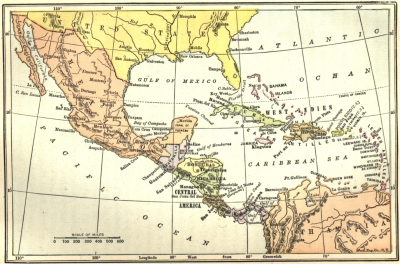
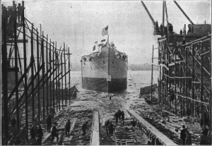
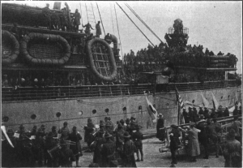
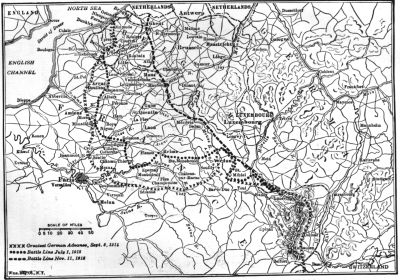
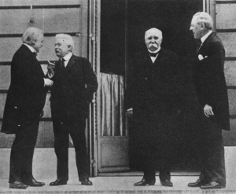
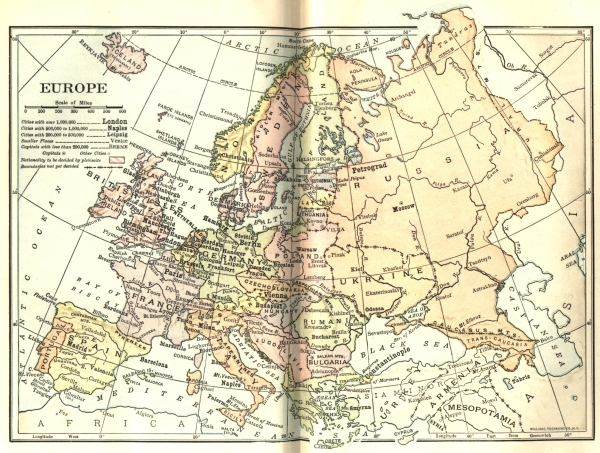

PRESIDENT WILSON AND THE WORLD WAR
"The welfare, the happiness, the energy, and the spirit of the men and women who do the daily work in our mines and factories, on our railroads, in our offices and ports of trade, on our farms, and on the sea are the underlying necessity of all prosperity." Thus spoke Woodrow Wilson during his campaign for election. In this spirit, as President, he gave the signal for work by summoning Congress in a special session on April 7, 1913. He invited the coöperation of all "forward-looking men" and indicated that he would assume the rôle of leadership. As an evidence of his resolve, he appeared before Congress in person to read his first message, reviving the old custom of Washington and Adams. Then he let it be known that he would not give his party any rest until it fulfilled its pledges to the country. When Democratic Senators balked at tariff reductions, they were sharply informed that the party had plighted its word and that no excuses or delays would be tolerated.
Domestic Legislation
Financial Measures. —Under this spirited leadership Congress went to work, passing first the Underwood tariff act of 1913, which made a downward revision in the rates of duty, fixing them on the average about twenty-six per cent lower than the figures of 1907. The protective principle was retained, but an effort was made to permit a moderate element of foreign competition. As a part of the revenue act Congress levied a tax on incomes as authorized by the sixteenth amendment to the Constitution. The tax which roused such party passions twenty years before was now accepted as a matter of course.
Having disposed of the tariff, Congress took up the old and vexatious currency question and offered a new solution in the form of the federal reserve law of December, 1913. This measure, one of the most interesting in the history of federal finance, embraced four leading features. In the first place, it continued
the prohibition on the issuance of notes by state banks and provided for a national currency. In the second place, it put the new banking system under the control of a federal reserve board composed entirely of government officials. To prevent the growth of a "central money power," it provided, in the third place, for the creation of twelve federal reserve banks, one in each of twelve great districts into which the country is divided. All local national banks were required and certain other banks permitted to become members of the new system and share in its control. Finally, with a view to expanding the currency, a step which the Democrats had long urged upon the country, the issuance of paper money, under definite safeguards, was authorized.
Mindful of the agricultural interest, ever dear to the heart of Jefferson's followers, the Democrats supplemented the reserve law by the Farm Loan Act of 1916, creating federal agencies to lend money on farm mortgages at moderate rates of interest. Within a year $20,000,000 had been lent to farmers, the heaviest borrowing being in nine Western and Southern states, with Texas in the lead.
Anti-trust Legislation. —The tariff and currency laws were followed by three significant measures relative to trusts. Rejecting utterly the Progressive doctrine of government regulation, President Wilson announced that it was the purpose of the Democrats "to destroy monopoly and maintain competition as the only effective instrument of business liberty." The first step in this direction, the Clayton Anti-trust Act, carried into great detail the Sherman law of 1890 forbidding and penalizing combinations in restraint of interstate and foreign trade. In every line it revealed a determined effort to tear apart the great trusts and to put all business on a competitive basis. Its terms were reinforced in the same year by a law creating a Federal Trade Commission empowered to inquire into the methods of corporations and lodge complaints against concerns "using any unfair method of competition." In only one respect was the severity of the Democratic policy relaxed. An act of 1918 provided that the Sherman law should not apply to companies engaged in export trade, the purpose being to encourage large corporations to enter foreign commerce.
The effect of this whole body of anti-trust legislation, in spite of much labor on it, remained problematical.
Very few combinations were dissolved as a result of it. Startling investigations were made into alleged abuses on the part of trusts; but it could hardly be said that huge business concerns had lost any of their predominance in American industry.
Labor Legislation. —By no mere coincidence, the Clayton Anti-trust law of 1914 made many concessions to organized labor. It declared that "the labor of a human being is not a commodity or an article of commerce," and it exempted unions from prosecution as "combinations in restraint of trade." It likewise defined and limited the uses which the federal courts might make of injunctions in labor disputes and guaranteed trial by jury to those guilty of disobedience (see p. 581).
The Clayton law was followed the next year by the Seamen's Act giving greater liberty of contract to American sailors and requiring an improvement of living conditions on shipboard. This was such a drastic law that shipowners declared themselves unable to meet foreign competition under its terms, owing to the low labor standards of other countries.
Still more extraordinary than the Seamen's Act was the Adamson law of 1916 fixing a standard eight-hour work-day for trainmen on railroads—a measure wrung from Congress under a threat of a great strike by the four Railway Brotherhoods. This act, viewed by union leaders as a triumph, called forth a bitter denunciation of "trade union domination," but it was easier to criticize than to find another solution of the problem.
Three other laws enacted during President Wilson's administration were popular in the labor world. One of them provided compensation for federal employees injured in the discharge of their duties. Another prohibited the labor of children under a certain age in the industries of the nation. A third prescribed for coal miners in Alaska an eight-hour day and modern safeguards for life and health. There were positive
proofs that organized labor had obtained a large share of power in the councils of the country.
Federal and State Relations. —If the interference of the government with business and labor represented a departure from the old idea of "the less government the better," what can be said of a large body of laws affecting the rights of states? The prohibition of child labor everywhere was one indication of the new tendency. Mr. Wilson had once declared such legislation unconstitutional; the Supreme Court declared it unconstitutional; but Congress, undaunted, carried it into effect under the guise of a tax on goods made by children below the age limit. There were other indications of the drift. Large sums of money were appropriated by Congress in 1916 to assist the states in building and maintaining highways. The same year the Farm Loan Act projected the federal government into the sphere of local money lending. In 1917
millions of dollars were granted to states in aid of vocational education, incidentally imposing uniform standards throughout the country. Evidently the government was no longer limited to the duties of the policeman.
The Prohibition Amendment. —A still more significant form of intervention in state affairs was the passage, in December, 1917, of an amendment to the federal Constitution establishing national prohibition of the manufacture and sale of intoxicating liquors as beverages. This was the climax of a historical movement extending over half a century. In 1872, a National Prohibition party, launched three years before, nominated its first presidential candidate and inaugurated a campaign of agitation. Though its vote was never large, the cause for which it stood found increasing favor among the people. State after state by popular referendum abolished the liquor traffic within its borders. By 1917 at least thirty-two of the forty-eight were "dry." When the federal amendment was submitted for approval, the ratification was surprisingly swift. In a little more than a year, namely, on January 16, 1919, it was proclaimed. Twelve months later the amendment went into effect.
Colonial and Foreign Policies
The Philippines and Porto Rico. —Independence for the Philippines and larger self-government for Porto Rico had been among the policies of the Democratic party since the campaign of 1900. President Wilson in his annual messages urged upon Congress more autonomy for the Filipinos and a definite promise of final independence. The result was the Jones Organic Act for the Philippines passed in 1916. This measure provided that the upper as well as the lower house of the Philippine legislature should be elected by popular vote, and declared it to be the intention of the United States to grant independence "as soon as a stable government can be established." This, said President Wilson on signing the bill, is "a very satisfactory advance in our policy of extending to them self-government and control of their own affairs."
The following year Congress, yielding to President Wilson's insistence, passed a new organic act for Porto Rico, making both houses of the legislature elective and conferring American citizenship upon the inhabitants of the island.

The Caribbean Region
American Power in the Caribbean. —While extending more self-government to its dominions, the United States enlarged its sphere of influence in the Caribbean. The supervision of finances in Santo Domingo, inaugurated in Roosevelt's administration, was transformed into a protectorate under Wilson. In 1914 dissensions in the republic led to the landing of American marines to "supervise" the elections. Two years later, an officer in the American navy, with authority from Washington, placed the entire republic
"in a state of military occupation." He proceeded to suspend the government and laws of the country, exile the president, suppress the congress, and substitute American military authority. In 1919 a consulting board of four prominent Dominicans was appointed to aid the American military governor; but it resigned the next year after making a plea for the restoration of independence to the republic. For all practical purposes, it seemed, the sovereignty of Santo Domingo had been transferred to the United States.
In the neighboring republic of Haiti, a similar state of affairs existed. In the summer of 1915 a revolution broke out there—one of a long series beginning in 1804—and our marines were landed to restore order.
Elections were held under the supervision of American officers, and a treaty was drawn up placing the management of Haitian finances and the local constabulary under American authority. In taking this action, our Secretary of State was careful to announce: "The United States government has no purpose of aggression and is entirely disinterested in promoting this protectorate." Still it must be said that there were vigorous protests on the part of natives and American citizens against the conduct of our agents in the island. In 1921 President Wilson was considering withdrawal.
In line with American policy in the West Indian waters was the purchase in 1917 of the Danish Islands just off the coast of Porto Rico. The strategic position of the islands, especially in relation to Haiti and Porto Rico, made them an object of American concern as early as 1867, when a treaty of purchase was negotiated only to be rejected by the Senate of the United States. In 1902 a second arrangement was made, but this time it was defeated by the upper house of the Danish parliament. The third treaty brought an end to fifty years of bargaining and the Stars and Stripes were raised over St. Croix, St. Thomas, St. John, and numerous minor islands scattered about in the neighborhood. "It would be suicidal," commented a New York newspaper, "for America, on the threshold of a great commercial expansion in South America, to suffer a Heligoland, or a Gibraltar, or an Aden to be erected by her rivals at the mouth of her Suez." On the mainland American power was strengthened by the establishment of a protectorate over Nicaragua in 1916.
Mexican Relations. —The extension of American enterprise southward into Latin America, of which the operations in the Caribbean regions were merely one phase, naturally carried Americans into Mexico to
develop the natural resources of that country. Under the iron rule of General Porfirio Diaz, established in 1876 and maintained with only a short break until 1911, Mexico had become increasingly attractive to our business men. On the invitation of President Diaz, they had invested huge sums in Mexican lands, oil fields, and mines, and had laid the foundations of a new industrial order. The severe régime instituted by Diaz, however, stirred popular discontent. The peons, or serfs, demanded the breakup of the great estates, some of which had come down from the days of Cortez. Their clamor for "the restoration of the land to the people could not be silenced." In 1911 Diaz was forced to resign and left the country.
Mexico now slid down the path to disorder. Revolutions and civil commotions followed in swift succession. A liberal president, Madero, installed as the successor to Diaz, was deposed in 1913 and brutally murdered. Huerta, a military adventurer, hailed for a time as another "strong man," succeeded Madero whose murder he was accused of instigating. Although Great Britain and nearly all the powers of Europe accepted the new government as lawful, the United States steadily withheld recognition. In the meantime Mexico was torn by insurrections under the leadership of Carranza, a friend of Madero, Villa, a bandit of generous pretensions, and Zapata, a radical leader of the peons. Without the support of the United States, Huerta was doomed.
In the summer of 1914, the dictator resigned and fled from the capital, leaving the field to Carranza. For six years the new president, recognized by the United States, held a precarious position which he vigorously strove to strengthen against various revolutionary movements. At length in 1920, he too was deposed and murdered, and another military chieftain, Obregon, installed in power.
These events right at our door could not fail to involve the government of the United States. In the disorders many American citizens lost their lives. American property was destroyed and land owned by Americans was confiscated. A new Mexican constitution, in effect nationalizing the natural resources of the country, struck at the rights of foreign investors. Moreover the Mexican border was in constant turmoil. Even in the last days of his administration, Mr. Taft felt compelled to issue a solemn warning to the Mexican government protesting against the violation of American rights.
President Wilson, soon after his inauguration, sent a commissioner to Mexico to inquire into the situation.
Although he declared a general policy of "watchful waiting," he twice came to blows with Mexican forces.
In 1914 some American sailors at Tampico were arrested by a Mexican officer; the Mexican government, although it immediately released the men, refused to make the required apology for the incident. As a result President Wilson ordered the landing of American forces at Vera Cruz and the occupation of the city. A clash of arms followed in which several Americans were killed. War seemed inevitable, but at this juncture the governments of Argentina, Brazil, and Chile tendered their good offices as mediators. After a few weeks of negotiation, during which Huerta was forced out of power, American forces were withdrawn from Vera Cruz and the incident closed.
In 1916 a second break in amicable relations occurred. In the spring of that year a band of Villa's men raided the town of Columbus, New Mexico, killing several citizens and committing robberies. A punitive expedition under the command of General Pershing was quickly sent out to capture the offenders. Against the protests of President Carranza, American forces penetrated deeply into Mexico without effecting the object of the undertaking. This operation lasted until January, 1917, when the imminence of war with Germany led to the withdrawal of the American soldiers. Friendly relations were resumed with the Mexican government and the policy of "watchful waiting" was continued.
The United States and the European War
The Outbreak of the War. —In the opening days of August, 1914, the age-long jealousies of European nations, sharpened by new imperial ambitions, broke out in another general conflict such as had shaken the
world in the days of Napoleon. On June 28, the heir to the Austro-Hungarian throne was assassinated at Serajevo, the capital of Bosnia, an Austrian province occupied mainly by Serbs. With a view to stopping Serbian agitation for independence, Austria-Hungary laid the blame for this incident on the government of Serbia and made humiliating demands on that country. Germany at once proposed that the issue should be regarded as "an affair which should be settled solely between Austria-Hungary and Serbia"; meaning that the small nation should be left to the tender mercies of a great power. Russia refused to take this view.
Great Britain proposed a settlement by mediation. Germany backed up Austria to the limit. To use the language of the German authorities: "We were perfectly aware that a possible warlike attitude of Austria-Hungary against Serbia might bring Russia upon the field and that it might therefore involve us in a war, in accordance with our duties as allies. We could not, however, in these vital interests of Austria-Hungary which were at stake, advise our ally to take a yielding attitude not compatible with his dignity nor deny him our assistance." That made the war inevitable.
Every day of the fateful August, 1914, was crowded with momentous events. On the 1st, Germany declared war on Russia. On the 2d, the Germans invaded the little duchy of Luxemburg and notified the King of Belgium that they were preparing to violate the neutrality of his realm on their way to Paris. On the same day, Great Britain, anxiously besought by the French government, promised the aid of the British navy if German warships made hostile demonstrations in the Channel. August 3d, the German government declared war on France. The following day, Great Britain demanded of Germany respect for Belgian neutrality and, failing to receive the guarantee, broke off diplomatic relations. On the 5th, the British prime minister announced that war had opened between England and Germany. The storm now broke in all its pitiless fury.
The State of American Opinion. —Although President Wilson promptly proclaimed the neutrality of the United States, the sympathies of a large majority of the American people were without doubt on the side of Great Britain and France. To them the invasion of the little kingdom of Belgium and the horrors that accompanied German occupation were odious in the extreme. Moreover, they regarded the German imperial government as an autocratic power wielded in the interest of an ambitious military party. The Kaiser, William II, and the Crown Prince were the symbols of royal arrogance. On the other hand, many Americans of German descent, in memory of their ties with the Fatherland, openly sympathized with the Central Powers; and many Americans of Irish descent, recalling their long and bitter struggle for home rule in Ireland, would have regarded British defeat as a merited redress of ancient grievances.
Extremely sensitive to American opinion, but ill informed about it, the German government soon began systematic efforts to present its cause to the people of the United States in the most favorable light possible. Dr. Bernhard Dernburg, the former colonial secretary of the German empire, was sent to America as a special agent. For months he filled the newspapers, magazines, and periodicals with interviews, articles, and notes on the justice of the Teutonic cause. From a press bureau in New York flowed a stream of pamphlets, leaflets, and cartoons. A magazine, "The Fatherland," was founded to secure "fair play for Germany and Austria." Several professors in American universities, who had received their training in Germany, took up the pen in defense of the Central Empires. The German language press, without exception it seems, the National German Alliance, minor German societies, and Lutheran churches came to the support of the German cause. Even the English language papers, though generally favorable to the Entente Allies, opened their columns in the interest of equal justice to the spokesmen for all the contending powers of Europe.
Before two weeks had elapsed the controversy had become so intense that President Wilson (August 18, 1914) was moved to caution his countrymen against falling into angry disputes. "Every man," he said,
"who really loves America will act and speak in the true spirit of neutrality which is the spirit of impartiality and fairness and friendliness to all concerned.... We must be impartial in thought as well as in action, must put a curb upon our sentiments as well as upon every transaction that might be construed as a preference of one party to the struggle before another."
The Clash over American Trade. —As in the time of the Napoleonic wars, the conflict in Europe raised fundamental questions respecting rights of Americans trading with countries at peace as well as those at war. On this point there existed on August 1, 1914, a fairly definite body of principles by which nations were bound. Among them the following were of vital significance. In the first place, it was recognized that an enemy merchant ship caught on the high seas was a legitimate prize of war which might be seized and confiscated. In the second place, it was agreed that "contraband of war" found on an enemy or neutral ship was a lawful prize; any ship suspected of carrying it was liable to search and if caught with forbidden goods was subject to seizure. In the third place, international law prescribed that a peaceful merchant ship, whether belonging to an enemy or to a neutral country, should not be destroyed or sunk without provision for the safety of crew and passengers. In the fourth place, it was understood that a belligerent had the right, if it could, to blockade the ports of an enemy and prevent the ingress and egress of all ships; but such a blockade, to be lawful, had to be effective.
These general principles left undetermined two important matters: "What is an effective blockade?" and
"What is contraband of war?" The task of answering these questions fell to Great Britain as mistress of the seas. Although the German submarines made it impossible for her battleships to maintain a continuous patrol of the waters in front of blockaded ports, she declared the blockade to be none the less "effective"
because her navy was supreme. As to contraband of war Great Britain put such a broad interpretation upon the term as to include nearly every important article of commerce. Early in 1915 she declared even cargoes of grain and flour to be contraband, defending the action on the ground that the German government had recently taken possession of all domestic stocks of corn, wheat, and flour.
A new question arose in connection with American trade with the neutral countries surrounding Germany.
Great Britain early began to intercept ships carrying oil, gasoline, and copper—all war materials of prime importance—on the ground that they either were destined ultimately to Germany or would release goods for sale to Germans. On November 2, 1914, the English government announced that the Germans wore sowing mines in open waters and that therefore the whole of the North Sea was a military zone. Ships bound for Denmark, Norway, and Sweden were ordered to come by the English Channel for inspection and sailing directions. In effect, Americans were now licensed by Great Britain to trade in certain commodities and in certain amounts with neutral countries.
Against these extraordinary measures, the State Department at Washington lodged pointed objections, saying: "This government is reluctantly forced to the conclusion that the present policy of His Majesty's government toward neutral ships and cargoes exceeds the manifest necessity of a belligerent and constitutes restrictions upon the rights of American citizens on the high seas, which are not justified by the rules of international law or required under the principle of self-preservation."
Germany Begins the Submarine Campaign. —Germany now announced that, on and after February 18, 1915, the whole of the English Channel and the waters around Great Britain would be deemed a war zone and that every enemy ship found therein would be destroyed. The German decree added that, as the British admiralty had ordered the use of neutral flags by English ships in time of distress, neutral vessels would be in danger of destruction if found in the forbidden area. It was clear that Germany intended to employ submarines to destroy shipping. A new factor was thus introduced into naval warfare, one not provided for in the accepted laws of war. A warship overhauling a merchant vessel could easily take its crew and passengers on board for safe keeping as prescribed by international law; but a submarine ordinarily could do nothing of the sort. Of necessity the lives and the ships of neutrals, as well as of belligerents, were put in mortal peril. This amazing conduct Germany justified on the ground that it was mere retaliation against Great Britain for her violations of international law.
The response of the United States to the ominous German order was swift and direct. On February 10, 1915, it warned Germany that if her commanders destroyed American lives and ships in obedience to that
decree, the action would "be very hard indeed to reconcile with the friendly relations happily subsisting between the two governments." The American note added that the German imperial government would be held to "strict accountability" and all necessary steps would be taken to safeguard American lives and American rights. This was firm and clear language, but the only response which it evoked from Germany was a suggestion that, if Great Britain would allow food supplies to pass through the blockade, the submarine campaign would be dropped.
Violations of American Rights. —Meanwhile Germany continued to ravage shipping on the high seas. On January 28, a German raider sank the American ship, William P. Frye, in the South Atlantic; on March 28, a British ship, the Falaba, was sunk by a submarine and many on board, including an American citizen, were killed; and on April 28, a German airplane dropped bombs on the American steamer Cushing. On the morning of May 1, 1915, Americans were astounded to see in the newspapers an advertisement, signed by the German Imperial Embassy, warning travelers of the dangers in the war zone and notifying them that any who ventured on British ships into that area did so at their own risk. On that day, the Lusitania, a British steamer, sailed from New York for Liverpool. On May 7, without warning, the ship was struck by two torpedoes and in a few minutes went down by the bow, carrying to death 1153 persons including 114
American men, women, and children. A cry of horror ran through the country. The German papers in America and a few American people argued that American citizens had been duly warned of the danger and had deliberately taken their lives into their own hands; but the terrible deed was almost universally condemned by public opinion.
The Lusitania Notes. —On May 14, the Department of State at Washington made public the first of three famous notes on the Lusitania case. It solemnly informed the German government that "no warning that an unlawful and inhumane act will be committed can possibly be accepted as an excuse or palliation for that act or as an abatement of the responsibility for its commission." It called upon the German government to disavow the act, make reparation as far as possible, and take steps to prevent "the recurrence of anything so obviously subversive of the principles of warfare." The note closed with a clear caution to Germany that the government of the United States would not "omit any word or any act necessary to the performance of its sacred duty of maintaining the rights of the United States and its citizens and of safeguarding their free exercise and enjoyment." The die was cast; but Germany in reply merely temporized.
In a second note, made public on June 11, the position of the United States was again affirmed. William Jennings Bryan, the Secretary of State, had resigned because the drift of President Wilson's policy was not toward mediation but the strict maintenance of American rights, if need be, by force of arms. The German reply was still evasive and German naval commanders continued their course of sinking merchant ships. In a third and final note of July 21, 1915, President Wilson made it clear to Germany that he meant what he said when he wrote that he would maintain the rights of American citizens. Finally after much discussion and shifting about, the German ambassador on September 1, 1915, sent a brief note to the Secretary of State: "Liners will not be sunk by our submarines without warning and without safety of the lives of non-combatants, provided the liners do not try to escape or offer resistance." Editorially, the New York Times declared: "It is a triumph not only of diplomacy but of reason, of humanity, of justice, and of truth." The Secretary of State saw in it "a recognition of the fundamental principles for which we have contended."
The Presidential Election of 1916. —In the midst of this crisis came the presidential campaign. On the Republican side everything seemed to depend upon the action of the Progressives. If the breach created in 1912 could be closed, victory was possible; if not, defeat was certain. A promise of unity lay in the fact that the conventions of the Republicans and Progressives were held simultaneously in Chicago. The friends of Roosevelt hoped that both parties would select him as their candidate; but this hope was not realized. The Republicans chose, and the Progressives accepted, Charles E. Hughes, an associate justice of the federal Supreme Court who, as governor of New York, had won a national reputation by waging war on "machine politicians."
In the face of the clamor for expressions of sympathy with one or the other of the contending powers of Europe, the Republicans chose a middle course, declaring that they would uphold all American rights "at home and abroad, by land and by sea." This sentiment Mr. Hughes echoed in his acceptance speech. By some it was interpreted to mean a firmer policy in dealing with Great Britain; by others, a more vigorous handling of the submarine menace. The Democrats, on their side, renominated President Wilson by acclamation, reviewed with pride the legislative achievements of the party, and commended "the splendid diplomatic victories of our great President who has preserved the vital interests of our government and its citizens and kept us out of war."
In the election which ensued President Wilson's popular vote exceeded that cast for Mr. Hughes by more than half a million, while his electoral vote stood 277 to 254. The result was regarded, and not without warrant, as a great personal triumph for the President. He had received the largest vote yet cast for a presidential candidate. The Progressive party practically disappeared, and the Socialists suffered a severe set-back, falling far behind the vote of 1912.
President Wilson Urges Peace upon the Warring Nations. —Apparently convinced that his pacific policies had been profoundly approved by his countrymen, President Wilson, soon after the election, addressed "peace notes" to the European belligerents. On December 16, the German Emperor proposed to the Allied Powers that they enter into peace negotiations, a suggestion that was treated as a mere political maneuver by the opposing governments. Two days later President Wilson sent a note to the warring nations asking them to avow "the terms upon which war might be concluded." To these notes the Central Powers replied that they were ready to meet their antagonists in a peace conference; and Allied Powers answered by presenting certain conditions precedent to a satisfactory settlement. On January 22, 1917, President Wilson in an address before the Senate, declared it to be a duty of the United States to take part in the establishment of a stable peace on the basis of certain principles. These were, in short: "peace without victory"; the right of nationalities to freedom and self-government; the independence of Poland; freedom of the seas; the reduction of armaments; and the abolition of entangling alliances. The whole world was discussing the President's remarkable message, when it was dumbfounded to hear, on January 31, that the German ambassador at Washington had announced the official renewal of ruthless submarine warfare.
The United States at War
Steps toward War. —Three days after the receipt of the news that the German government intended to return to its former submarine policy, President Wilson severed diplomatic relations with the German empire. At the same time he explained to Congress that he desired no conflict with Germany and would await an "overt act" before taking further steps to preserve American rights. "God grant," he concluded,
"that we may not be challenged to defend them by acts of willful injustice on the part of the government of Germany." Yet the challenge came. Between February 26 and April 2, six American merchant vessels were torpedoed, in most cases without any warning and without regard to the loss of American lives.
President Wilson therefore called upon Congress to answer the German menace. The reply of Congress on April 6 was a resolution, passed with only a few dissenting votes, declaring the existence of a state of war with Germany. Austria-Hungary at once severed diplomatic relations with the United States; but it was not until December 7 that Congress, acting on the President's advice, declared war also on that "vassal of the German government."
American War Aims. —In many addresses at the beginning and during the course of the war, President Wilson stated the purposes which actuated our government in taking up arms. He first made it clear that it was a war of self-defense. "The military masters of Germany," he exclaimed, "denied us the right to be neutral." Proof of that lay on every hand. Agents of the German imperial government had destroyed American lives and American property on the high seas. They had filled our communities with spies. They
had planted bombs in ships and munition works. They had fomented divisions among American citizens.
Though assailed in many ways and compelled to resort to war, the United States sought no material rewards. "The world must be made safe for democracy. Its peace must be planted upon the tested foundations of political liberty. We have no selfish ends to serve. We desire no conquest, no dominion. We seek no indemnities for ourselves."
In a very remarkable message read to Congress on January 8, 1918, President Wilson laid down his famous "fourteen points" summarizing the ideals for which we were fighting. They included open treaties of peace, openly arrived at; absolute freedom of navigation upon the seas; the removal, as far as possible, of trade barriers among nations; reduction of armaments; adjustment of colonial claims in the interest of the populations concerned; fair and friendly treatment of Russia; the restoration of Belgium; righting the wrong done to France in 1871 in the matter of Alsace-Lorraine; adjustment of Italian frontiers along the lines of nationality; more liberty for the peoples of Austria-Hungary; the restoration of Serbia and Rumania; the readjustment of the Turkish Empire; an independent Poland; and an association of nations to afford mutual guarantees to all states great and small. On a later occasion President Wilson elaborated the last point, namely, the formation of a league of nations to guarantee peace and establish justice among the powers of the world. Democracy, the right of nations to determine their own fate, a covenant of enduring peace—these were the ideals for which the American people were to pour out their blood and treasure.
The Selective Draft. —The World War became a war of nations. The powers against which we were arrayed had every able-bodied man in service and all their resources, human and material, thrown into the scale. For this reason, President Wilson summoned the whole people of the United States to make every sacrifice necessary for victory. Congress by law decreed that the national army should be chosen from all male citizens and males not enemy aliens who had declared their intention of becoming citizens. By the first act of May 18, 1917, it fixed the age limits at twenty-one to thirty-one inclusive. Later, in August, 1918, it extended them to eighteen and forty-five. From the men of the first group so enrolled were chosen by lot the soldiers for the World War who, with the regular army and the national guard, formed the American Expeditionary Force upholding the American cause on the battlefields of Europe. "The whole nation," said the President, "must be a team in which each man shall play the part for which he is best fitted."
Liberty Loans and Taxes. —In order that the military and naval forces should be stinted in no respect, the nation was called upon to place its financial resources at the service of the government. Some urged the
"conscription of wealth as well as men," meaning the support of the war out of taxes upon great fortunes; but more conservative counsels prevailed. Four great Liberty Loans were floated, all the agencies of modern publicity being employed to enlist popular interest. The first loan had four and a half million subscribers; the fourth more than twenty million. Combined with loans were heavy taxes. A progressive tax was laid upon incomes beginning with four per cent on incomes in the lower ranges and rising to sixty-three per cent of that part of any income above $2,000,000. A progressive tax was levied upon inheritances. An excess profits tax was laid upon all corporations and partnerships, rising in amount to sixty per cent of the net income in excess of thirty-three per cent on the invested capital. "This," said a distinguished economist, "is the high-water mark in the history of taxation. Never before in the annals of civilization has an attempt been made to take as much as two-thirds of a man's income by taxation."
Mobilizing Material Resources. —No stone was left unturned to provide the arms, munitions, supplies, and transportation required in the gigantic undertaking. Between the declaration of war and the armistice, Congress enacted law after law relative to food supplies, raw materials, railways, mines, ships, forests, and industrial enterprises. No power over the lives and property of citizens, deemed necessary to the prosecution of the armed conflict, was withheld from the government. The farmer's wheat, the housewife's sugar, coal at the mines, labor in the factories, ships at the wharves, trade with friendly countries, the railways, banks, stores, private fortunes—all were mobilized and laid under whatever obligations the

government deemed imperative. Never was a nation more completely devoted to a single cause.
A law of August 10, 1917, gave the President power to fix the prices of wheat and coal and to take almost any steps necessary to prevent monopoly and excessive prices. By a series of measures, enlarging the principles of the shipping act of 1916, ships and shipyards were brought under public control and the government was empowered to embark upon a great shipbuilding program. In December, 1917, the government assumed for the period of the war the operation of the railways under a presidential proclamation which was elaborated in March, 1918, by act of Congress. In the summer of 1918 the express, telephone, and telegraph business of the entire country passed under government control. By war risk insurance acts allowances were made for the families of enlisted men, compensation for injuries was provided, death benefits were instituted, and a system of national insurance was established in the interest of the men in service. Never before in the history of the country had the government taken such a wise and humane view of its obligations to those who served on the field of battle or on the seas.
The Espionage and Sedition Acts. —By the Espionage law of June 15, 1917, and the amending law, known as the Sedition act, passed in May of the following year, the government was given a drastic power over the expression of opinion. The first measure penalized those who conveyed information to a foreign country to be used to the injury of the United States; those who made false statements designed to interfere with the military or naval forces of the United States; those who attempted to stir up insubordination or disloyalty in the army and navy; and those who willfully obstructed enlistment. The Sedition act was still more severe and sweeping in its terms. It imposed heavy penalties upon any person who used "abusive language about the government or institutions of the country." It authorized the dismissal of any officer of the government who committed "disloyal acts" or uttered "disloyal language," and empowered the Postmaster General to close the mails to persons violating the law. This measure, prepared by the Department of Justice, encountered vigorous opposition in the Senate, where twenty-four Republicans and two Democrats voted against it. Senator Johnson of California denounced it as a law "to suppress the freedom of the press in the United States and to prevent any man, no matter who he is, from expressing legitimate criticism concerning the present government." The constitutionality of the acts was attacked; but they were sustained by the Supreme Court and stringently enforced.
Copyright by Underwood and Underwood, N.Y.
The Launching of a Ship at the Great Naval Yards, Newark, N.J.
Labor and the War. —In view of the restlessness of European labor during the war and especially the proletarian revolution in Russia in November, 1917, some anxiety was early expressed as to the stand which organized labor might take in the United States. It was, however, soon dispelled. Samuel Gompers, speaking for the American Federation of Labor, declared that "this is labor's war," and pledged the united support of all the unions. There was some dissent. The Socialist party denounced the war as a capitalist quarrel; but all the protests combined were too slight to have much effect. American labor leaders were
sent to Europe to strengthen the wavering ranks of trade unionists in war-worn England, France, and Italy.
Labor was given representation on the important boards and commissions dealing with industrial questions. Trade union standards were accepted by the government and generally applied in industry. The Department of Labor became one of the powerful war centers of the nation. In a memorable address to the American Federation of Labor, President Wilson assured the trade unionists that labor conditions should not be made unduly onerous by the war and received in return a pledge of loyalty from the Federation.
Recognition of labor's contribution to winning the war was embodied in the treaty of peace, which provided for a permanent international organization to promote the world-wide effort of labor to improve social conditions. "The league of nations has for its object the establishment of universal peace," runs the preamble to the labor section of the treaty, "and such a peace can be established only if it is based upon social justice.... The failure of any nation to adopt humane conditions of labor is an obstacle in the way of other nations which desire to improve the conditions in their own countries."
The American Navy in the War. —As soon as Congress declared war the fleet was mobilized, American ports were thrown open to the warships of the Allies, immediate provision was made for increasing the number of men and ships, and a contingent of war vessels was sent to coöperate with the British and French in their life-and-death contest with submarines. Special effort was made to stimulate the production of "submarine chasers" and "scout cruisers" to be sent to the danger zone. Convoys were provided to accompany the transports conveying soldiers to France. Before the end of the war more than three hundred American vessels and 75,000 officers and men were operating in European waters. Though the German fleet failed to come out and challenge the sea power of the Allies, the battleships of the United States were always ready to do their full duty in such an event. As things turned out, the service of the American navy was limited mainly to helping in the campaign that wore down the submarine menace to Allied shipping.
The War in France. —Owing to the peculiar character of the warfare in France, it required a longer time for American military forces to get into action; but there was no unnecessary delay. Soon after the declaration of war, steps were taken to give military assistance to the Allies. The regular army was enlarged and the troops of the national guard were brought into national service. On June 13, General John J. Pershing, chosen head of the American Expeditionary Forces, reached Paris and began preparations for the arrival of our troops. In June, the vanguard of the army reached France. A slow and steady stream followed. As soon as the men enrolled under the draft were ready, it became a flood. During the period of the war the army was enlarged from about 190,000 men to 3,665,000, of whom more than 2,000,000 were in France when the armistice was signed.
Although American troops did not take part on a large scale until the last phase of the war in 1918, several battalions of infantry were in the trenches by October, 1917, and had their first severe encounter with the Germans early in November. In January, 1918, they took over a part of the front line as an American sector. In March, General Pershing placed our forces at the disposal of General Foch, commander-in-chief of the Allied armies. The first division, which entered the Montdidier salient in April, soon was engaged with the enemy, "taking with splendid dash the town of Cantigny and all other objectives, which were organized and held steadfastly against vicious counter attacks and galling artillery fire."

Copyright by Underwood and Underwood, N.Y.
Troops Returning from France
When the Germans launched their grand drives toward the Marne and Paris, in June and July, 1918, every available man was placed at General Foch's command. At Belleau Wood, at Château-Thierry, and other points along the deep salient made by the Germans into the French lines, American soldiers distinguished themselves by heroic action. They also played an important rôle in the counter attack that "smashed" the salient and drove the Germans back.
In September, American troops, with French aid, "wiped out" the German salient at St. Mihiel. By this time General Pershing was ready for the great American drive to the northeast in the Argonne forest, while he also coöperated with the British in the assault on the Hindenburg line. In the Meuse-Argonne battle, our soldiers encountered some of the most severe fighting of the war and pressed forward steadily against the most stubborn resistance from the enemy. On the 6th of November, reported General Pershing, "a division of the first corps reached a point on the Meuse opposite Sedan, twenty-five miles from our line of departure. The strategical goal which was our highest hope was gained. We had cut the enemy's main line of communications and nothing but a surrender or an armistice could save his army from complete disaster." Five days later the end came. On the morning of November 11, the order to cease firing went into effect. The German army was in rapid retreat and demoralization had begun. The Kaiser had abdicated and fled into Holland. The Hohenzollern dreams of empire were shattered. In the fifty-second month, the World War, involving nearly every civilized nation on the globe, was brought to a close. More than 75,000 American soldiers and sailors had given their lives. More than 250,000 had been wounded or were missing or in German prison camps.


Western Battle Lines of the Various Years of the World War
The Settlement at Paris
The Peace Conference. —On January 18, 1919, a conference of the Allied and Associated Powers assembled to pronounce judgment upon the German empire and its defeated satellites: Austria-Hungary, Bulgaria, and Turkey. It was a moving spectacle. Seventy-two delegates spoke for thirty-two states. The United States, Great Britain, France, Italy, and Japan had five delegates each. Belgium, Brazil, and Serbia were each assigned three. Canada, Australia, South Africa, India, China, Greece, Hedjaz, Poland, Portugal, Rumania, Siam, and Czechoslovakia were allotted two apiece. The remaining states of New Zealand, Bolivia, Cuba, Ecuador, Guatemala, Haiti, Honduras, Liberia, Nicaragua, Panama, Peru, and Uruguay each had one delegate. President Wilson spoke in person for the United States. England, France, and Italy were represented by their premiers: David Lloyd George, Georges Clémenceau, and Vittorio Orlando.
Premiers Lloyd George, Orlando and Clémenceau and President Wilson at Paris The Supreme Council. —The real work of the settlement was first committed to a Supreme Council of ten representing the United States, Great Britain, France, Italy, and Japan. This was later reduced to five members. Then Japan dropped out and finally Italy, leaving only President Wilson and the Premiers,
Lloyd George and Clémenceau, the "Big Three," who assumed the burden of mighty decisions. On May 6, their work was completed and in a secret session of the full conference the whole treaty of peace was approved, though a few of the powers made reservations or objections. The next day the treaty was presented to the Germans who, after prolonged protests, signed on the last day of grace, June 28. This German treaty was followed by agreements with Austria, Hungary, Bulgaria, and Turkey. Collectively these great documents formed the legal basis of the general European settlement.
The Terms of the Settlement. —The combined treaties make a huge volume. The German treaty alone embraces about 80,000 words. Collectively they cover an immense range of subjects which may be summarized under five heads: (1) The territorial settlement in Europe; (2) the destruction of German military power; (3) reparations for damages done by Germany and her allies; (4) the disposition of German colonies and protectorates; and (5) the League of Nations.
Germany was reduced by the cession of Alsace-Lorraine to France and the loss of several other provinces.
Austria-Hungary was dissolved and dismembered. Russia was reduced by the creation of new states on the west. Bulgaria was stripped of her gains in the recent Balkan wars. Turkey was dismembered. Nine new independent states were created: Poland, Finland, Lithuania, Latvia, Esthonia, Ukraine, Czechoslovakia, Armenia, and Hedjaz. Italy, Greece, Rumania, and Serbia were enlarged by cessions of territory and Serbia was transformed into the great state of Jugoslavia.
The destruction of German military power was thorough. The entire navy, with minor exceptions, was turned over to the Allied and Associated Powers; Germany's total equipment for the future was limited to six battleships and six light cruisers, with certain small vessels but no submarines. The number of enlisted men and officers for the army was fixed at not more than 100,000; the General Staff was dissolved; and the manufacture of munitions restricted.
Germany was compelled to accept full responsibility for all damages; to pay five billion dollars in cash and goods, and to make certain other payments which might be ordered from time to time by an inter-allied reparations commission. She was also required to deliver to Belgium, France, and Italy, millions of tons of coal every year for ten years; while by way of additional compensation to France the rich coal basin of the Saar was placed under inter-allied control to be exploited under French administration for a period of at least fifteen years. Austria and the other associates of Germany were also laid under heavy obligations to the victors. Damages done to shipping by submarines and other vessels were to be paid for on the basis of ton for ton.
The disposition of the German colonies and the old Ottoman empire presented knotty problems. It was finally agreed that the German colonies and Turkish provinces which were in a backward stage of development should be placed under the tutelage of certain powers acting as "mandatories" holding them in "a sacred trust of civilization." An exception to the mandatory principle arose in the case of German rights in Shantung, all of which were transferred directly to Japan. It was this arrangement that led the Chinese delegation to withhold their signatures from the treaty.
The League of Nations. —High among the purposes which he had in mind in summoning the nation to arms, President Wilson placed the desire to put an end to war. All through the United States the people spoke of the "war to end war." No slogan called forth a deeper response from the public. The President himself repeatedly declared that a general association of nations must be formed to guard the peace and protect all against the ambitions of the few. "As I see it," he said in his address on opening the Fourth Liberty Loan campaign, "the constitution of the League of Nations and the clear definition of its objects must be a part, in a sense the most essential part, of the peace settlement itself."
Nothing was more natural, therefore, than Wilson's insistence at Paris upon the formation of an international association. Indeed he had gone to Europe in person largely to accomplish that end. Part One
of the treaty with Germany, the Covenant of the League of Nations, was due to his labors more than to any other influence. Within the League thus created were to be embraced all the Allied and Associated Powers and nearly all the neutrals. By a two-thirds vote of the League Assembly the excluded nations might be admitted.
The agencies of the League of Nations were to be three in number: (1) a permanent secretariat located at Geneva; (2) an Assembly consisting of one delegate from each country, dominion, or self-governing colony (including Canada, Australia, South Africa, New Zealand, and India); (3) and a Council consisting of representatives of the United States, Great Britain, France, Italy, and Japan, and four other representatives selected by the Assembly from time to time.
The duties imposed on the League and the obligations accepted by its members were numerous and important. The Council was to take steps to formulate a scheme for the reduction of armaments and to submit a plan for the establishment of a permanent Court of International Justice. The members of the League (Article X) were to respect and preserve as against external aggression the territorial integrity and existing political independence of all the associated nations. They were to submit to arbitration or inquiry by the Council all disputes which could not be adjusted by diplomacy and in no case to resort to war until three months after the award. Should any member disregard its covenants, its action would be considered an act of war against the League, which would accordingly cut off the trade and business of the hostile member and recommend through the Council to the several associated governments the military measures to be taken. In case the decision in any arbitration of a dispute was unanimous, the members of the League affected by it were to abide by it.
Such was the settlement at Paris and such was the association of nations formed to promote the peace of the world. They were quickly approved by most of the powers, and the first Assembly of the League of Nations met at Geneva late in 1920.
The Treaty in the United States. —When the treaty was presented to the United States Senate for approval, a violent opposition appeared. In that chamber the Republicans had a slight majority and a two-thirds vote was necessary for ratification. The sentiment for and against the treaty ran mainly along party lines; but the Republicans were themselves divided. The major portion, known as "reservationists,"
favored ratification with certain conditions respecting American rights; while a small though active minority rejected the League of Nations in its entirety, announcing themselves to be "irreconcilables." The grounds of this Republican opposition lay partly in the terms of peace imposed on Germany and partly in the Covenant of the League of Nations. Exception was taken to the clauses which affected the rights of American citizens in property involved in the adjustment with Germany, but the burden of criticism was directed against the League. Article X guaranteeing against external aggression the political independence and territorial integrity of the members of the League was subjected to a specially heavy fire; while the treatment accorded to China and the sections affecting American internal affairs were likewise attacked as
"unjust and dangerous." As an outcome of their deliberations, the Republicans proposed a long list of reservations which touched upon many of the vital parts of the treaty. These were rejected by President Wilson as amounting in effect to a "nullification of the treaty." As a deadlock ensued the treaty was definitely rejected, owing to the failure of its sponsors to secure the requisite two-thirds vote.

The League of Nations in the Campaign of 1920. —At this juncture the presidential campaign of 1920
opened. The Republicans, while condemning the terms of the proposed League, endorsed the general idea of an international agreement to prevent war. Their candidate, Senator Warren G. Harding of Ohio, maintained a similar position without saying definitely whether the League devised at Paris could be recast in such a manner as to meet his requirements. The Democrats, on the other hand, while not opposing limitations clarifying the obligations of the United States, demanded "the immediate ratification of the treaty without reservations which would impair its essential integrity." The Democratic candidate, Governor James M. Cox, of Ohio, announced his firm conviction that the United States should "go into the League," without closing the door to mild reservations; he appealed to the country largely on that issue.
The election of Senator Harding, in an extraordinary "landslide," coupled with the return of a majority of Republicans to the Senate, made uncertain American participation in the League of Nations.
The United States and International Entanglements. —Whether America entered the League or not, it could not close its doors to the world and escape perplexing international complications. It had ever-increasing financial and commercial connections with all other countries. Our associates in the recent war were heavily indebted to our government. The prosperity of American industries depended to a considerable extent upon the recovery of the impoverished and battle-torn countries of Europe.
There were other complications no less specific. The United States was compelled by force of circumstances to adopt a Russian policy. The government of the Czar had been overthrown by a liberal revolution, which in turn had been succeeded by an extreme, communist "dictatorship." The Bolsheviki, or majority faction of the socialists, had obtained control of the national council of peasants, workingmen, and soldiers, called the soviet, and inaugurated a radical régime. They had made peace with Germany in March, 1918. Thereupon the United States joined England, France, and Japan in an unofficial war upon
them. After the general settlement at Paris in 1919, our government, while withdrawing troops from Siberia and Archangel, continued in its refusal to recognize the Bolshevists or to permit unhampered trade with them. President Wilson repeatedly denounced them as the enemies of civilization and undertook to lay down for all countries the principles which should govern intercourse with Russia.
Further international complications were created in connection with the World War, wholly apart from the terms of peace or the League of Nations. The United States had participated in a general European conflict which changed the boundaries of countries, called into being new nations, and reduced the power and territories of the vanquished. Accordingly, it was bound to face the problem of how far it was prepared to coöperate with the victors in any settlement of Europe's difficulties. By no conceivable process, therefore, could America be disentangled from the web of world affairs. Isolation, if desirable, had become impossible. Within three hundred years from the founding of the tiny settlements at Jamestown and Plymouth, America, by virtue of its institutions, its population, its wealth, and its commerce, had become first among the nations of the earth. By moral obligations and by practical interests its fate was thus linked with the destiny of all mankind.
Summary of Democracy and the World War
The astounding industrial progress that characterized the period following the Civil War bequeathed to the new generation many perplexing problems connected with the growth of trusts and railways, the accumulation of great fortunes, the increase of poverty in the industrial cities, the exhaustion of the free land, and the acquisition of dominions in distant seas. As long as there was an abundance of land in the West any able-bodied man with initiative and industry could become an independent farmer. People from the cities and immigrants from Europe had always before them that gateway to property and prosperity.
When the land was all gone, American economic conditions inevitably became more like those of Europe.
Though the new economic questions had been vigorously debated in many circles before his day, it was President Roosevelt who first discussed them continuously from the White House. The natural resources of the country were being exhausted; he advocated their conservation. Huge fortunes were being made in business creating inequalities in opportunity; he favored reducing them by income and inheritance taxes.
Industries were disturbed by strikes; he pressed arbitration upon capital and labor. The free land was gone; he declared that labor was in a less favorable position to bargain with capital and therefore should organize in unions for collective bargaining. There had been wrong-doing on the part of certain great trusts; those responsible should be punished.
The spirit of reform was abroad in the land. The spoils system was attacked. It was alleged that the political parties were dominated by "rings and bosses." The United States Senate was called "a millionaires' club." Poverty and misery were observed in the cities. State legislatures and city governments were accused of corruption.
In answer to the charges, remedies were proposed and adopted. Civil service reform was approved. The Australian ballot, popular election of Senators, the initiative, referendum, and recall, commission and city manager plans for cities, public regulation of railways, compensation for those injured in industries, minimum wages for women and children, pensions for widows, the control of housing in the cities—these and a hundred other reforms were adopted and tried out. The national watchword became: "America, Improve Thyself."
The spirit of reform broke into both political parties. It appeared in many statutes enacted by Congress under President Taft's leadership. It disrupted the Republicans temporarily in 1912 when the Progressive party entered the field. It led the Democratic candidate in that year, Governor Wilson, to make a
"progressive appeal" to the voters. It inspired a considerable program of national legislation under President Wilson's two administrations.
In the age of change, four important amendments to the federal constitution, the first in more than forty years, were adopted. The sixteenth empowered Congress to lay an income tax. The seventeenth assured popular election of Senators. The eighteenth made prohibition national. The nineteenth, following upon the adoption of woman suffrage in many states, enfranchised the women of the nation.
In the sphere of industry, equally great changes took place. The major portion of the nation's business passed into the hands of corporations. In all the leading industries of the country labor was organized into trade unions and federated in a national organization. The power of organized capital and organized labor loomed upon the horizon. Their struggles, their rights, and their place in the economy of the nation raised problems of the first magnitude.
While the country was engaged in a heated debate upon its domestic issues, the World War broke out in Europe in 1914. As a hundred years before, American rights upon the high seas became involved at once.
They were invaded on both sides; but Germany, in addition to assailing American ships and property, ruthlessly destroyed American lives. She set at naught the rules of civilized warfare upon the sea.
Warnings from President Wilson were without avail. Nothing could stay the hand of the German war party.
After long and patient negotiations, President Wilson in 1917 called upon the nation to take up arms against an assailant that had in effect declared war upon America. The answer was swift and firm. The national resources, human and material, were mobilized. The navy was enlarged, a draft army created, huge loans floated, heavy taxes laid, and the spirit of sacrifice called forth in a titanic struggle against an autocratic power that threatened to dominate Europe and the World.
In the end, American financial, naval, and military assistance counted heavily in the scale. American sailors scoured the seas searching for the terrible submarines. American soldiers took part in the last great drives that broke the might of Germany's army. Such was the nation's response to the President's summons to arms in a war "for democracy" and "to end war."
When victory crowned the arms of the powers united against Germany, President Wilson in person took part in the peace council. He sought to redeem his pledge to end wars by forming a League of Nations to keep the peace. In the treaty drawn at the close of the war the first part was a covenant binding the nations in a permanent association for the settlement of international disputes. This treaty, the President offered to the United States Senate for ratification and to his country for approval.
Once again, as in the days of the Napoleonic wars, the people seriously discussed the place of America among the powers of the earth. The Senate refused to ratify the treaty. World politics then became an issue in the campaign of 1920. Though some Americans talked as if the United States could close its doors and windows against all mankind, the victor in the election, Senator Harding, of Ohio, knew better. The election returns were hardly announced before he began to ask the advice of his countrymen on the pressing theme that would not be downed: "What part shall America—first among the nations of the earth in wealth and power—assume at the council table of the world?"
General References
Woodrow Wilson, The New Freedom.
C.L. Jones, The Caribbean Interests of the United States.
H.P. Willis, The Federal Reserve.
C.W. Barron, The Mexican Problem (critical toward Mexico).
L.J. de Bekker, The Plot against Mexico (against American intervention).
Theodore Roosevelt, America and the World War.
E.E. Robinson and V.J. West, The Foreign Policy of Woodrow Wilson.
J.S. Bassett, Our War with Germany.
Carlton J.H. Hayes, A Brief History of the Great War.
J.B. McMaster, The United States in the World War.
Research Topics
President Wilson's First Term. —Elson, History of the United States, pp. 925-941.
The Underwood Tariff Act. —Ogg, National Progress (The American Nation Series), pp. 209-226.
The Federal Reserve System. —Ogg, pp. 228-232.
Trust and Labor Legislation. —Ogg, pp. 232-236.
Legislation Respecting the Territories. —Ogg, pp. 236-245.
American Interests in the Caribbean. —Ogg, pp. 246-265.
American Interests in the Pacific. —Ogg, pp. 304-324.
Mexican Affairs. —Haworth, pp. 388-395; Ogg, pp. 284-304.
The First Phases of the European War. —Haworth, pp. 395-412; Ogg, pp. 325-343.
The Campaign of 1916. —Haworth, pp. 412-418; Ogg, pp. 364-383.
America Enters the War. —Haworth, pp. 422-440; pp. 454-475. Ogg, pp. 384-399; Elson, pp. 951-970.
Mobilizing the Nation. —Haworth, pp. 441-453.
The Peace Settlement. —Haworth, pp. 475-497; Elson, pp. 971-982.
Questions
1. Enumerate the chief financial measures of the Wilson administration. Review the history of banks and currency and give the details of the Federal reserve law.
2. What was the Wilson policy toward trusts? Toward labor?
3. Review again the theory of states' rights. How has it fared in recent years?
4. What steps were taken in colonial policies? In the Caribbean?
5. Outline American-Mexican relations under Wilson.
6. How did the World War break out in Europe?
7. Account for the divided state of opinion in America.
8. Review the events leading up to the War of 1812. Compare them with the events from 1914 to 1917.
9. State the leading principles of international law involved and show how they were violated.
10. What American rights were assailed in the submarine campaign?
11. Give Wilson's position on the Lusitania affair.
12. How did the World War affect the presidential campaign of 1916?
13. How did Germany finally drive the United States into war?
14. State the American war aims given by the President.
15. Enumerate the measures taken by the government to win the war.
16. Review the part of the navy in the war. The army.
17. How were the terms of peace formulated?
18. Enumerate the principal results of the war.
19. Describe the League of Nations.
20. Trace the fate of the treaty in American politics.
21. Can there be a policy of isolation for America?
APPENDIX
CONSTITUTION OF THE UNITED STATES
We the people of the United States, in order to form a more perfect union, establish justice, insure domestic tranquillity, provide for the common defence, promote the general welfare, and secure the blessings of liberty to ourselves and our posterity, do ordain and establish this Constitution for the United States of America.
Article I
Section 1. All legislative powers herein granted shall be vested in a Congress of the United States, which shall consist of a Senate and House of Representatives.
Section 2. 1. The House of Representatives shall be composed of members chosen every second year by the people of the several States, and the electors in each State shall have the qualifications requisite for electors of the most numerous branch of the State legislature.
2. No person shall be a representative who shall not have attained to the age of twenty-five years, and been seven years a citizen of the United States, and who shall not, when elected, be an inhabitant of that State in which he shall be chosen.
3. Representatives and direct taxes[3] shall be apportioned among the several States which may be
included within this Union, according to their respective numbers, which shall be determined by adding to the whole number of free persons, including those bound to service for a term of years, and excluding
years after the first meeting of the Congress of the United States, and within every subsequent term of ten years, in such manner as they shall by law direct. The number of representatives shall not exceed one for every thirty thousand, but each State shall have at least one representative; and until such enumeration shall be made, the State of New Hampshire shall be entitled to choose three, Massachusetts eight, Rhode Island and Providence Plantations one, Connecticut five, New York six, New Jersey four, Pennsylvania eight, Delaware one, Maryland six, Virginia ten, North Carolina five, South Carolina five, and Georgia three.
4. When vacancies happen in the representation from any State, the executive authority thereof shall issue writs of election to fill such vacancies.
5. The House of Representatives shall choose their speaker and other officers; and shall have the sole power of impeachment.
Section 3. 1. The Senate of the United States shall be composed of two senators from each State, chosen by the legislature thereof, for six years; and each senator shall have one vote. [4]
2. Immediately after they shall be assembled in consequence of the first election, they shall be divided as equally as may be into three classes. The seats of the senators of the first class shall be vacated at the expiration of the second year, of the second class at the expiration of the fourth year, and of the third class at the expiration of the sixth year, so that one-third may be chosen every second year; and if vacancies happen by resignation, or otherwise, during the recess of the legislature of any State, the executive thereof may make temporary appointments until the next meeting of the legislature, which shall then fill such
3. No person shall be a senator who shall not have attained to the age of thirty years, and been nine years a citizen of the United States, and who shall not, when elected, be an inhabitant of that State for which he shall be chosen.
4. The Vice-President of the United States shall be President of the Senate, but shall have no vote, unless they be equally divided.
5. The Senate shall choose their other officers, and also a President pro tempore, in the absence of the Vice-President, or when he shall exercise the office of President of the United States.
6. The Senate shall have the sole power to try all impeachments. When sitting for that purpose, they shall
be on oath or affirmation. When the President of the United States is tried, the chief justice shall preside: And no person shall be convicted without the concurrence of two-thirds of the members present.
7. Judgment in cases of impeachment shall not extend further than to removal from office, and disqualification to hold and enjoy any office of honor, trust, or profit under the United States: but the party convicted shall nevertheless be liable and subject to indictment, trial, judgment, and punishment, according to law.
Section 4. 1. The times, places, and manner of holding elections for senators and representatives, shall be prescribed in each State by the legislature thereof; but the Congress may at any time by law make or alter such regulations, except as to the places of choosing senators.
2. The Congress shall assemble at least once in every year, and such meeting shall be on the first Monday in December, unless they shall by law appoint a different day.
Section 5. 1. Each House shall be the judge of the elections, returns and qualifications of its own members, and a majority of each shall constitute a quorum to do business; but a smaller number may adjourn from day to day, and may be authorized to compel the attendance of absent members, in such manner, and under such penalties as each House may provide.
2. Each House may determine the rules of its proceedings, punish its members for disorderly behaviour, and, with the concurrence of two-thirds, expel a member.
3. Each House shall keep a journal of its proceedings, and from time to time publish the same, excepting such parts as may in their judgment require secrecy; and the yeas and nays of the members of either House on any question shall, at the desire of one-fifth of those present, be entered on the journal.
4. Neither House, during the session of Congress, shall, without the consent of the other, adjourn for more than three days, nor to any other place than that in which the two Houses shall be sitting.
Section 6. 1. The senators and representatives shall receive a compensation for their services, to be ascertained by law, and paid out of the Treasury of the United States. They shall in all cases, except treason, felony, and breach of the peace, be privileged from arrest during their attendance at the sessions of their respective Houses, and in going to and returning from the same; and, for any speech or debate in either House, they shall not be questioned in any other place.
2. No senator or representative shall, during the time for which he was elected, be appointed to any civil office under the authority of the United States, which shall have been created, or the emoluments whereof shall have been increased during such time; and no person, holding any office under the United States, shall be a member of either House during his continuance in office.
Section 7. 1. All bills for raising revenue shall originate in the House of Representatives; but the Senate may propose or concur with amendments as on other bills.
2. Every bill, which shall have passed the House of Representatives; and the Senate, shall, before it become a law, be presented to the President of the United States; if he approve he shall sign it, but if not he shall return it with his objections to that House, in which it shall have originated, who shall enter the objections at large on their journal, and proceed to reconsider it. If after such reconsideration two-thirds of that House shall agree to pass the bill, it shall be sent, together with the objections, to the other House, by which it shall likewise be reconsidered, and if approved by two-thirds of that House, it shall become a law.
But in all such cases the votes of both Houses shall be determined by yeas and nays, and the names of the persons voting for and against the bill shall be entered on the journal of each House respectively. If any
bill shall not be returned by the President within ten days (Sundays excepted) after it shall have been presented to him, the same shall be a law, in like manner as if he had signed it, unless the Congress by their adjournment prevent its return, in which case it shall not be a law.
3. Every order, resolution, or vote to which the concurrence of the Senate and House of Representatives may be necessary (except on a question of adjournment) shall be presented to the President of the United States and before the same shall take effect, shall be approved by him, or being disapproved by him, shall be repassed by two-thirds of the Senate and House of Representatives, according to the rules and limitations prescribed in the case of a bill.
Section 8. The Congress shall have power: 1. To lay and collect taxes, duties, imposts, and excises, to pay the debts and provide for the common defence and general welfare of the United States; but all duties, imposts, and excises shall be uniform throughout the United States;
2. To borrow money on the credit of the United States;
3. To regulate commerce with foreign nations, and among the several States, and with the Indian tribes; 4. To establish an uniform rule of naturalization, and uniform laws on the subject of bankruptcies throughout the United States;
5. To coin money, regulate the value thereof, and of foreign coin, and fix the standard of weights and measures;
6. To provide for the punishment of counterfeiting the securities and current coin of the United States; 7. To establish post offices and post roads;
8. To promote the progress of science and useful arts by securing for limited times to authors and inventors the exclusive right to their respective writings and discoveries;
9. To constitute tribunals inferior to the Supreme Court;
10. To define and punish piracies and felonies committed on the high seas, and offences against the law of nations;
11. To declare war, grant letters of marque and reprisal, and make rules concerning captures on land and water;
12. To raise and support armies, but no appropriation of money to that use shall be for a longer term than two years;
13. To provide and maintain a navy;
14. To make rules for the government and regulation of the land and naval forces; 15. To provide for calling forth the militia to execute the laws of the Union, suppress insurrections, and repel invasions;
16. To provide for organizing, arming, and disciplining the militia, and for governing such part of them as may be employed in the service of the United States, reserving to the States respectively the appointment of the officers, and the authority of training the militia according to the discipline prescribed by Congress.
17. To exercise exclusive legislation in all cases whatsoever, over such district (not exceeding ten miles square) as may, by cession of particular States and the acceptance of Congress, become the seat of the government of the United States, and to exercise like authority over all places purchased by the consent of the legislature of the State in which the same shall be, for the erection of forts, magazines, arsenals, dock-yards, and other needful buildings;—and
18. To make all laws which shall be necessary and proper for carrying into execution the foregoing powers, and all other powers vested by this Constitution in the government of the United States, or in any department or officer thereof.
Section 9. 1. The migration or importation of such persons as any of the States now existing shall think proper to admit, shall not be prohibited by the Congress prior to the year one thousand eight hundred and eight, but a tax or duty may be imposed on such importation, not exceeding ten dollars for each person.
2. The privilege of the writ of habeas corpus shall not be suspended, unless when in cases of rebellion or invasion the public safety may require it.
3. No bill of attainder or ex post facto law shall be passed.
4. No capitation, or other direct, tax shall be laid, unless in proportion to the census or enumeration
hereinbefore directed to be taken.[6]
5. No tax or duty shall be laid on articles exported from any State.
6. No preference shall be given by any regulation of commerce or revenue to the ports of one State over those of another: nor shall vessels bound to, or from, one State, be obliged to enter, clear, or pay duties in another.
7. No money shall be drawn from the Treasury, but in consequence of appropriations made by law; and a regular statement and account of the receipts and expenditures of all public money shall be published from time to time.
8. No title of nobility shall be granted by the United States; and no person, holding any office of profit or trust under them, shall, without the consent of the Congress, accept of any present, emolument, office, or title, of any kind whatever, from any king, prince, or foreign State.
Section 10. 1. No State shall enter into any treaty, alliance, or confederation; grant letters of marque and reprisal; coin money; emit bills of
credit; make anything but gold and silver coin a tender in payment of debts; pass any bill of attainder, ex post facto law, or law impairing the obligation of contracts; or grant any title of nobility.
2. No State shall, without the consent of the Congress, lay any imposts or duties on imports or exports, except what may be absolutely necessary for executing its inspection laws: and the net produce of all duties and imposts, laid by any State on imports or exports, shall be for the use of the Treasury of the United States; and all such laws shall be subject to the revision and control of the Congress.
3. No State shall, without the consent of Congress, lay any duty of tonnage, keep troops, or ships of war in time of peace, enter into any agreement or compact with another State, or with a foreign power, or engage in war unless actually invaded, or in such imminent danger as will not admit of delay.
Article II
Section 1. 1. The executive power shall be vested in a President of the United States of America. He shall hold his office during the term of four years, and, together with the Vice-President, chosen for the same term, be elected, as follows:
2. Each State shall appoint, in such manner as the legislature thereof may direct, a number of electors, equal to the whole number of senators and representatives to which the State may be entitled in the Congress; but no senator or representative, or person holding an office of trust or profit under the United
for two persons, of whom one at least shall not be an inhabitant of the same State with themselves. And they shall make a list of all the persons voted for, and of the number of votes for each; which list they shall sign and certify, and transmit sealed to the seat of the government of the United States, directed to the president of the Senate. The President of the Senate shall, in the presence of the Senate and House of Representatives, open all the certificates, and the votes shall then be counted. The person having the greatest number of votes shall be the President, if such number be a majority of the whole number of electors appointed; and if there be more than one who have such majority, and have an equal number of votes, then the House of Representatives shall immediately choose by ballot one of them for President; and if no person have a majority, then from the five highest on the list the said House shall in like manner choose the President. But in choosing the President, the votes shall be taken by States, the representation from each State having one vote; a quorum for this purpose shall consist of a member or members from two-thirds of the States and a majority of all the States shall be necessary to a choice. In every case, after the choice of the President, the person having the greatest number of votes of the electors shall be the Vice-President. But if there should remain two or more who have equal votes, the Senate shall choose from
them by ballot the Vice-President.[8]
3. The Congress may determine the time of choosing the electors, and the day on which they shall give their votes; which day shall be the same throughout the United States.
4. No person except a natural born citizen, or a citizen of the United States, at the time of the adoption of this Constitution, shall be eligible to the office of President; neither shall any person be eligible to that office who shall not have attained to the age of thirty-five years, and been fourteen years a resident within the United States.
5. In case of the removal of the President from office, or of his death, resignation, or inability to discharge the powers and duties of the said office, the same shall devolve on the Vice-President, and the Congress may by law provide for the case of removal, death, resignation, or inability both of the President and Vice-President, declaring what officer shall then act as President, and such officer shall act accordingly, until the disability be removed, or a President shall be elected.
6. The President shall, at stated times, receive for his services a compensation, which shall neither be increased nor diminished during the period for which he shall have been elected, and he shall not receive within that period any other emolument from the United States, or any of them.
7. Before he enter on the execution of his office, he shall take the following oath or affirmation:—"I do solemnly swear (or affirm) that I will faithfully execute the office of President of the United States, and will to the best of my ability, preserve, protect, and defend the Constitution of the United States."
Section 2. 1. The President shall be commander-in-chief of the army and navy of the United States, and of the militia of the several States, when called into the actual service of the United States; he may require the opinion, in writing, of the principal officer in each of the executive departments, upon any subject relating to the duties of their respective offices, and he shall have power to grant reprieves and pardons for offences against the United States, except in cases of impeachment.
2. He shall have power, by and with the advice and consent of the Senate, to make treaties, provided two-thirds of the senators present concur; and he shall nominate, and by and with the advice and consent of the Senate, shall appoint ambassadors, other public ministers and consuls, judges of the Supreme Court, and all other officers of the United States, whose appointments are not herein otherwise provided for, and which shall be established by law: but the Congress may by law vest the appointment of such inferior officers, as they think proper, in the President alone, in the courts of law, or in the heads of departments.
3. The President shall have power to fill all vacancies that may happen during the recess of the Senate, by granting commissions which shall expire at the end of their next session.
Section 3. He shall from time to time give to the Congress information on the state of the Union, and recommend to their consideration such measures as he shall judge necessary and expedient; he may, on extraordinary occasions, convene both Houses, or either of them, and in case of disagreement between them, with respect to the time of adjournment, he may adjourn them to such time as he shall think proper; he shall receive ambassadors and other public ministers; he shall take care that the laws be faithfully executed, and shall commission all the officers of the United States.
Section 4. The President, Vice-President, and all civil officers of the United States shall be removed from office on impeachment for, and conviction of, treason, bribery, or other high crimes and misdemeanors.
Article III
Section 1. The judicial power of the United States shall be vested in one Supreme Court, and in such inferior courts as the Congress may from time to time ordain and establish. The judges, both of the Supreme and inferior courts, shall hold their offices during good behaviour, and shall, at stated times, receive for their services a compensation, which shall not be diminished during their continuance in office.
Section 2. 1. The judicial power shall extend to all cases, in law and equity, arising under this Constitution, the laws of the United States, and treaties made, or which shall be made, under their authority;—to all cases affecting ambassadors, other public ministers and consuls;—to all cases of admiralty and maritime jurisdiction;—to controversies to which the United States shall be a party;—to controversies between two or more States;—between a State and citizens of another State; [9]—between citizens of different
States;—between citizens of the same State claiming lands under grants of different States;—and between a State, or the citizens thereof, and foreign States, citizens, or subjects.
2. In all cases affecting ambassadors, other public ministers and consuls and those in which a State shall be a party, the Supreme Court shall have original jurisdiction. In all the other cases before mentioned, the Supreme Court shall have appellate jurisdiction, both as to law and fact, with such exceptions and under such regulations as the Congress shall make.
3. The trial of all crimes, except in cases of impeachment, shall be by jury; and such trial shall be held in the State where the said crimes shall have been committed; but when not committed within any State, the trial shall be at such place or places as the Congress may by law have directed.
Section 3. 1. Treason against the United States shall consist only in levying war against them, or in adhering to their enemies, giving them aid and comfort. No person shall be convicted of treason unless on the testimony of two witnesses to the same overt act, or on confession in open court.
2. The Congress shall have power to declare the punishment of treason, but no attainder of treason shall work corruption of blood or forfeiture except during the life of the person attainted.
Section 1. Full faith and credit shall be given in each State to the public acts, records, and judicial proceedings of every other State. And the Congress may by general laws prescribe the manner in which such acts, records, and proceedings shall be proved, and the effect thereof.
Section 2. 1. The citizens of each State shall be entitled to all privileges and immunities of citizens in the several States.
2. A person charged in any State with treason, felony, or other crime, who shall flee from justice, and be found in another State, shall on demand of the executive authority of the State from which he fled, be delivered up, to be removed to the State having jurisdiction of the crime.
3. No person held to service or labor in one State, under the laws thereof, escaping into another, shall, in consequence of any law or regulation therein, be discharged from such service or labor, but shall be delivered up on claim of the party to whom such service or labor may be due.
Section 3. 1. New States may be admitted by the Congress into this Union; but no new State shall be formed or erected within the jurisdiction of any other State; nor any State be formed by the junction of two or more States, or parts of States, without the consent of the legislatures of the States concerned as well as of the Congress.
2. The Congress shall have power to dispose of and make all needful rules and regulations respecting the territory or other property belonging to the United States; and nothing in this Constitution shall be so construed as to prejudice any claims, of the United States, or of any particular State.
Section 4. The United States shall guarantee to every State in this Union a republican form of government, and shall protect each of them against invasion; and on application of the legislature, or of the executive (when the legislature cannot be convened), against domestic violence.
Article V
The Congress, whenever two-thirds of both Houses shall deem it necessary, shall propose amendments to this Constitution, or, on the application of the legislatures of two-thirds of the several States, shall call a convention for proposing amendments, which, in either case, shall be valid to all intents and purposes as part of this Constitution, when ratified by the legislatures of three-fourths of the several States, or by conventions in three-fourths thereof, as the one or the other mode of ratification may be proposed by the Congress; provided that no amendment which may be made prior to the year one thousand eight hundred and eight shall in any manner affect the first and fourth clauses in the ninth Section of the first article; and that no State, without its consent, shall be deprived of its equal suffrage in the Senate.
Article VI
1. All debts contracted and engagements entered into, before the adoption of this Constitution, shall be as valid against the United States under this Constitution, as under the Confederation.
2. This Constitution and the laws of the United States which shall be made in pursuance thereof and all treaties made, or which shall be made, under the authority of the United States, shall be the supreme law of the land; and the judges in every State shall be bound thereby, anything in the Constitution or laws of any State to the contrary notwithstanding.
3. The senators and representatives before mentioned, and the members of the several State legislatures, and all executive and judicial officers, both of the United States and of the several States, shall be bound by oath or affirmation to support this Constitution; but no religious test shall ever be required as a qualification to any office or public trust under the United States.
Article VII
The ratification of the conventions of nine States shall be sufficient for the establishment of this Constitution between the States so ratifying the same.
Done in Convention by the unanimous consent of the States present the seventeenth day of September in the year of our Lord one thousand seven hundred and eighty-seven and of the independence of the United States of America the twelfth. In witness whereof we have hereunto subscribed our names, Go. Washington—
Presidt. and Deputy from Virginia
[and thirty-eight members from all the States except Rhode Island.]
Articles in addition to, and amendment of, the Constitution of the United States of America, proposed by Congress, and ratified by the legislatures of the several States pursuant to the fifth article of the original Constitution.
Article I[10]
Congress shall make no law respecting an establishment of religion, or prohibiting the free exercise thereof; or abridging the freedom of speech, or of the press; or the right of the people peaceably to assemble, and to petition the government for a redress of grievances.
Article II
A well regulated militia, being necessary to the security of a free State, the right of the people to keep and bear arms shall not be infringed.
Article III
No soldier shall, in time of peace, be quartered in any house, without the consent of the owner, nor in time of war, but in a manner to be prescribed by law.
Article IV
The right of the people to be secure in their persons, houses, papers, and effects, against unreasonable searches and seizures, shall not be violated, and no warrants shall issue, but upon probable cause, supported by oath or affirmation, and particularly describing the place to be searched, and the persons or
Article V
No person shall be held to answer for a capital, or otherwise infamous crime, unless on a presentment or indictment of a grand jury, except in cases arising in the land or naval forces, or in the militia, when in actual service in time of war or public danger; nor shall any person be subject for the same offence to be twice put in jeopardy of life or limb; nor shall be compelled in any criminal case to be a witness against himself; nor be deprived of life, liberty, or property, without due process of law; nor shall private property be taken for public use, without just compensation.
Article VI
In all criminal prosecutions, the accused shall enjoy the right to a speedy and public trial, by an impartial jury of the State and district wherein the crime shall have been committed, which district shall have been previously ascertained by law, and to be informed of the nature and cause of the accusation; to be confronted with the witnesses against him; to have compulsory process for obtaining witnesses in his favor, and to have the assistance of counsel for his defence.
Article VII
In suits at common law, where the value in controversy shall exceed twenty dollars, the right of trial by jury shall be preserved, and no fact tried by a jury shall be otherwise reexamined in any court of the United States, than according to the rules of the common law.
Article VIII
Excessive bail shall not be required, nor excessive fines imposed, nor cruel and unusual punishments inflicted.
Article IX
The enumeration in the Constitution, of certain rights, shall not be construed to deny or disparage others retained by the people.
Article X
The powers not delegated to the United States by the Constitution, nor prohibited by it to the States, are reserved to the States respectively, or to the people.
The judicial power of the United States shall not be construed to extend to any suit in law or equity, commenced or prosecuted against one of the United States by citizens of another State, or by citizens or subjects of any foreign State.
The electors shall meet in their respective States, and vote by ballot for President and Vice-President, one of whom at least shall not be an inhabitant of the same State with themselves; they shall name in their ballots the person voted for as President, and in distinct ballots the person voted for as Vice-President, and they shall make distinct lists of all persons voted for as President, and of all persons voted for as Vice-President, and of the number of votes for each, which lists they shall sign and certify, and transmit sealed to the seat of the government of the United States, directed to the President of the Senate;—The President of the Senate shall, in presence of the Senate and House of Representatives, open all the certificates and the votes shall then be counted;—The person having the greatest number of votes for President, shall be the President, if such number be a majority of the whole number of electors appointed; and if no person have such majority, then from the persons having the highest numbers not exceeding three on the list of those voted for as President, the House of Representatives shall choose immediately, by ballot, the President. But in choosing the President, the votes shall be taken by States, the representation from each State having one vote; a quorum for this purpose shall consist of a member or members from two-thirds of the States, and a majority of all the States shall be necessary to a choice. And if the House of Representatives shall not choose a President whenever the right of choice shall devolve upon them, before the fourth day of March next following, then the Vice-President shall act as President, as in the case of the death or other constitutional disability of the President. The person having the greatest number of votes as Vice-President, shall be the Vice-President, if such number be a majority of the whole number of electors appointed, and if no person have a majority, then from the two highest members on the list, the Senate shall choose the Vice-President; a quorum for the purpose shall consist of two-thirds of the whole number of senators, and a majority of the whole number shall be necessary to a choice. But no person constitutionally ineligible to the office of President shall be eligible to that of Vice-President of the United States.
Article XIII[13]
Section 1. Neither slavery nor involuntary servitude, except as a punishment for crime whereof the party shall have been duly convicted, shall exist within the United States, or any place subject to their jurisdiction.
Section 2. Congress shall have power to enforce this article by appropriate legislation.
Article XIV[14]
Section 1. All persons born or naturalized in the United States, and subject to the jurisdiction thereof, are citizens of the United States and of the State wherein they reside. No State shall make or enforce any law which shall abridge the privileges or immunities of citizens of the United States; nor shall any State deprive any person of life, liberty, or property without due process of law; nor deny to any person within its jurisdiction the equal protection of the laws.
Section 2. Representatives shall be apportioned among the several States according to their respective numbers, counting the whole number of persons in each State, excluding Indians not taxed. But when the right to vote at any election for the choice of electors for President and Vice-President of the United States, representatives in Congress, the executive and judicial officers of a State, or the members of the legislature thereof, is denied to any of the male inhabitants of such State, being twenty-one years of age, and citizens of the United States, or in any way abridged, except for participation in rebellion or other crime, the basis of representation therein shall be reduced in the proportion which the number of such male citizens shall bear to the whole number of male citizens twenty-one years of age in such State.
Section 3. No person shall be a senator or representative in Congress, or elector of President and Vice-
President, or hold any office, civil or military, under the United States, or under any State, who, having previously taken an oath, as a member of Congress, or as an officer of the United States, or as a member of any State legislature, or as an executive or judicial officer of any State, to support the Constitution of the United States, shall have engaged in insurrection or rebellion against the same, or given aid or comfort to the enemies thereof. But Congress may by two-thirds vote of each House, remove such disability.
Section 4. The validity of the public debt of the United States, authorized by law, including debts incurred for payment of pensions and bounties for services in suppressing insurrection or rebellion, shall not be questioned. But neither the United States nor any State shall assume or pay any debt or obligation incurred in aid of insurrection or rebellion against the United States, or any claim for the loss or emancipation of any slave; but all such debts, obligations, and claims shall be held illegal and void.
Section 5. The Congress shall have power to enforce, by appropriate legislation, the provisions of this article.
Article XV[15]
Section 1. The right of citizens of the United States to vote shall not be denied or abridged by the United States or by any State on account of race, color, or previous condition of servitude.
Section 2. The Congress shall have power to enforce this article by appropriate legislation.
Article XVI[16]
The Congress shall have power to lay and collect taxes on incomes, from whatever source derived, without apportionment among the several States, and without regard to any census or enumeration.
The Senate of the United States shall be composed of two senators from each State, elected by the people thereof, for six years; and each senator shall have one vote. The electors in each State shall have the qualifications requisite for electors of the most numerous branch of the State legislature.
When vacancies happen in the representation of any State in the Senate, the executive authority of each State shall issue writs of election to fill such vacancies: Provided that the legislature of any State may empower the executive thereof to make temporary appointments until the people fill the vacancies by election as the legislature may direct.
This amendment shall not be so construed as to effect the election or term of any senator chosen before it becomes valid as part of the Constitution.
Section 1. After one year from the ratification of this article the manufacture, sale, or transportation of intoxicating liquors within, the importation thereof into, or the exportation thereof from the United States and all territory subject to the jurisdiction thereof for beverage purposes is hereby prohibited.
Section 2. The Congress and the several States shall have concurrent power to enforce this article by appropriate legislation.
Section 3. This article shall be inoperative unless it shall have been ratified as an amendment to the Constitution by the legislatures of the several States, as provided in the Constitution, within seven years from the date of the submission hereof to the States by the Congress.
Article XIX[19]
The right of citizens of the United States to vote shall not be denied or abridged by the United States or any State on account of sex.
The Congress shall have power to enforce this article by appropriate legislation.
POPULATION OF THE UNITED STATES, BY
STATES: 1920, 1910, 1900
States
Population
1920
1910
1900
United States
105,708,771 91,972,266 75,994,575
Alabama
2,348,174
2,138,093
1,828,697
Arizona
333,903
204,354
122,931
Arkansas
1,752,204
1,574,449
1,311,564
California
3,426,861
2,377,549
1,485,053
Colorado
939,629
799,024
539,700
Connecticut
1,380,631
1,114,756
908,420
Delaware
223,003
202,322
184,735
District of Columbia
437,571
331,069
278,718
Florida
968,470
752,619
528,542
Georgia
2,895,832
2,609,121
2,216,331
Idaho
431,866
325,594
161,772
Illinois
6,485,280
5,638,591
4,821,550
Indiana
2,930,390
2,700,876
2,516,462
Iowa
2,404,021
2,224,771
2,231,853
Kansas
1,769,257
1,690,949
1,470,495
Kentucky
2,416,630
2,289,905
2,147,174
Louisiana
1,798,509
1,656,388
1,381,625
Maine
768,014
742,371
694,466
Maryland
1,449,661
1,295,346
1,188,044
Massachusetts
3,852,356
3,366,416
2,805,346
Michigan
3,668,412
2,810,173
2,420,982
Minnesota
2,387,125
2,075,708
1,751,394
Mississippi
1,790,618
1,797,114
1,551,270
Missouri
3,404,055
3,293,335
3,106,665
Montana
548,889
376,053
243,329
1,296,372
1,192,214
1,066,300
Nevada
77,407
81,875
42,335
New Hampshire
443,407
430,572
411,588
New Jersey
3,155,900
2,537,167
1,883,669
New Mexico
360,350
327,301
195,310
New York
10,384,829
9,113,614
7,268,894
North Carolina
2,559,123
2,206,287
1,893,810
North Dakota
645,680
577,056
319,146
Ohio
5,759,394
4,767,121
4,157,545
Oklahoma
2,028,283
1,657,155
790,391
Oregon
783,389
672,765
413,536
Pennsylvania
8,720,017
7,665,111
6,302,115
Rhode Island
604,397
542,610
428,556
South Carolina
1,683,724
1,515,400
1,340,316
South Dakota
636,547
583,888
401,570
Tennessee
2,337,885
2,184,789
2,020,616
Texas
4,663,228
3,896,542
3,048,710
Utah
449,396
373,351
276,749
Vermont
352,428
355,956
343,641
Virginia
2,309,187
2,061,612
1,854,184
Washington
1,356,621
1,141,990
518,103
West Virginia
1,463,701
1,221,119
958,800
Wisconsin
2,632,067
2,333,860
2,069,042
Wyoming
194,402
145,965
92,531
APPENDIX
TABLE OF PRESIDENTS
Year in
Name
State Party
Vice-President
Office
1 George Washington
Va.
Fed. 1789-1797 John Adams
2 John Adams
Mass. Fed. 1797-1801 Thomas Jefferson
Aaron Burr
3 Thomas Jefferson
Va.
Rep. 1801-1809 George Clinton
George Clinton
4 James Madison
Va.
Rep. 1809-1817 Elbridge Gerry
5 James Monroe
Va.
Rep. 1817-1825 Daniel D. Tompkins
6 John Q. Adams
Mass. Rep. 1825-1829 John C. Calhoun
John C. Calhoun
7 Andrew Jackson
Tenn. Dem. 1829-1837 Martin Van Buren
8 Martin Van Buren
N.Y. Dem. 1837-1841 Richard M. Johnson
Ohio Whig 1841-1841 John Tyler
Va.
Whig 1841-1845
11 James K. Polk
Tenn. Dem. 1845-1849 George M. Dallas
12 Zachary Taylor
La.
Whig 1849-1850 Millard Fillmore
N.Y. Whig 1850-1853
14 Franklin Pierce
N.H. Dem. 1853-1857 William R. King
15 James Buchanan
Pa.
Dem. 1857-1861 J.C. Breckinridge
Hannibal Hamlin
16 Abraham Lincoln
Ill.
Rep. 1861-1865 Andrew Johnson
17 Andrew Johnson[20]
Tenn. Rep. 1865-1869
Schuyler Colfax
18 Ulysses S. Grant
Ill.
Rep. 1869-1877 Henry Wilson
19 Rutherford B. Hayes
Ohio Rep. 1877-1881 Wm. A. Wheeler
20 James A. Garfield
Ohio Rep. 1881-1881 Chester A. Arthur
21 Chester A. Arthur[20]
N.Y. Rep. 1881-1885
22 Grover Cleveland
N.Y. Dem. 1885-1889 Thomas A. Hendricks
23 Benjamin Harrison
Ind.
Rep. 1889-1893 Levi P. Morton
24 Grover Cleveland
N.Y. Dem. 1893-1897 Adlai E. Stevenson
Garrett A. Hobart
25 William McKinley
Ohio Rep. 1897-1901 Theodore Roosevelt
26 Theodore Roosevelt[20] N.Y. Rep. 1901-1909 Chas. W. Fairbanks 27 William H. Taft
Ohio Rep. 1909-1913 James S. Sherman
28 Woodrow Wilson
N.J.
Dem. 1913-1921 Thomas R. Marshall
29 Warren G. Harding
Ohio Rep. 1921—
Calvin Coolidge
POPULATION OF THE OUTLYING POSSESSIONS:
1920 AND 1910
AREA
1920
1910
United States with outlying possessions
117,857,509 101,146,530
Continental United States
105,708,771
91,972,266
Outlying Possessions
12,148,738
9,174 264
54,899
64,356
American Samoa
8,056
Guam
13,275
11,806
Hawaii
255,912
191,909
Panama Canal Zone
22,858
Porto Rico
1,299,809 1,118,012
Military and naval, etc., service abroad
117,238
55,608
Philippine Islands
Virgin Islands of the United States
A TOPICAL SYLLABUS
As a result of a wholesome reaction against the purely chronological treatment of history, there is now a marked tendency in the direction of a purely topical handling of the subject. The topical method, however, may also be pushed too far. Each successive stage of any topic can be understood only in relation to the forces of the time. For that reason, the best results are reached when there is a combination of the chronological and the topical methods. It is therefore suggested that the teacher first follow the text closely and then review the subject with the aid of this topical syllabus. The references are to pages.
Immigration
I. Causes: religious (1-2, 4-11, 302), economic (12-17, 302-303), and political
II. Colonial immigration.
1. Diversified character: English, Scotch-Irish, Irish, Jews, Germans and other peoples (6-12).
2. Assimilation to an American type; influence of the land system (23-
3. Enforced immigration: indentured servitude, slavery, etc. (13-17).
III. Immigration between 1789-1890
1. Nationalities: English, Irish, Germans, and Scandinavians (278, 302-
2. Relations to American life (432-433, 445).
IV. Immigration and immigration questions after 1890.
1. Change in nationalities (410-411).
2. Changes in economic opportunities (411).
3. Problems of congestion and assimilation (410).
4. Relations to labor and illiteracy (582-586).
5. Oriental immigration (583).
6. The restriction of immigration (583-585).
Expansion of the United States
1. Territory of the United States in 1783 (134 and color map).
2. Louisiana purchase, 1803 (188-193 and color map).
3. Florida purchase, 1819 (204).
4. Annexation of Texas, 1845 (278-281).
5. Acquisition of Arizona, New Mexico, California, and other territory at
close of Mexican War, 1848 (282-283).
6. The Gadsden purchase, 1853 (283).
7. Settlement of the Oregon boundary question, 1846 (284-286).
8. Purchase of Alaska from Russia, 1867 (479).
9. Acquisition of Tutuila in Samoan group, 1899 (481-482).
10. Annexation of Hawaii, 1898 (484).
11. Acquisition of Porto Rico, the Philippines, and Guam at close of
12. Acquisition of Panama Canal strip, 1904 (508-510).
13. Purchase of Danish West Indies, 1917 (593).
14. Extension of protectorate over Haiti, Santo Domingo, and Nicaragua (593-594).
II. Development of colonial self-government.
III. Sea power.
1. In American Revolution (118).
2. In the War of 1812 (193-201).
3. In the Civil War (353-354).
4. In the Spanish-American War (492).
5. In the Caribbean region (512-519).
6. In the Pacific (447-448, 481).
7. The rôle of the American navy (515).
The Westward Advance of the People
I. Beyond the Appalachians.
1. Government and land system (217-231).
3. The settlers (221-223, 228-230).
4. Relations with the East (230-236).
II. Beyond the Mississippi.
1. The lower valley (271-273).
2. The upper valley (275-276).
III. Prairies, plains, and desert.
1. Cattle ranges and cowboys (276-278, 431-432).
2. The free homesteads (432-433).
3. Irrigation (434-436, 523-525).
IV. The Far West.
1. Peculiarities of the West (433-440).
3. Relations to the East and Europe (443-447).
4. American power in the Pacific (447-449).
The Wars of American History
II. Early colonial wars: King William's, Queen Anne's, and King George's (59).
III. French and Indian War (Seven Years' War), 1754-1763 (59-61).
IV. Revolutionary War, 1775-1783 (99-135).
V. The War of 1812, 1812-1815 (193-201).
VI. The Mexican War, 1845-1848 (276-284).
VII. The Civil War, 1861-1865 (344-375).
VIII. The Spanish War, 1898 (485-497).
IX. The World War, 1914-1918 [American participation, 1917-1918] (596-625).
Government
I. Development of the American system of government.
1. Origin and growth of state government.
a. The trading corporation (2-4), religious congregation (4-5),
and proprietary system (5-6).
b. Government of the colonies (48-53).
c. Formation of the first state constitutions (108-110).
d. The admission of new states ( see Index under each state).
e. Influence of Jacksonian Democracy (238-247).
f. Growth of manhood suffrage (238-244).
g. Nullification and state sovereignty (180-182, 251-257).
h. The doctrine of secession (345-346).
i. Effects of the Civil War on position of states (366, 369-375).
j. Political reform—direct government—initiative, referendum,
2. Origin and growth of national government.
a. British imperial control over the colonies (64-72).
b. Attempts at intercolonial union—New England Confederation,
c. The Stamp Act Congress (85-86).
d. The Continental Congresses (99-101).
e. The Articles of Confederation (110-111, 139-143).
f. The formation of the federal Constitution (143-160).
g. Development of the federal Constitution.
(1) Amendments 1-11—rights of persons and states (163).
(2) Twelfth amendment—election of President (184,
note).
(3) Amendments 13-15—Civil War settlement (358, 366,
(4) Sixteenth amendment—income tax (528-529).
(5) Seventeenth amendment—election of Senators (541-
542).
(6) Eighteenth amendment—prohibition (591-592).
(7) Nineteenth amendment—woman suffrage (563-568).
3. Development of the suffrage.
a. Colonial restrictions (51-52).
b. Provisions of the first state constitutions (110, 238-240).
c. Position under federal Constitution of 1787(149).
d. Extension of manhood suffrage (241-244).
e. Extension and limitation of negro suffrage (373-375, 382-387).
II. Relation of government to economic and social welfare.
1. Debt and currency.
a. Colonial paper money (80).
b. Revolutionary currency and debt (125-127).
c. Disorders under Articles of Confederation (140-141).
d. Powers of Congress under the Constitution to coin money ( see
Constitution in the Appendix).
e. First United States bank notes (167).
f. Second United States bank notes (257).
h. Civil War greenbacks and specie payment (352-353, 454).
j. Notes of National Banks under act of 1864 (369).
k. Demonetization of silver and silver legislation (452-458).
l. The gold standard (472).
m. The federal reserve notes (589).
n. Liberty bonds (606).
2. Banking systems.
a. The first United States bank (167).
b. The second United States bank—origin and destruction (203,
c. United States treasury system (263).
e. The national banking system of 1864 (369).
f. Services of banks (407-409).
g. Federal reserve system (589).
3. The tariff.
a. British colonial system (69-72).
b. Disorders under Articles of Confederation (140).
c. The first tariff under the Constitution (150, 167-168).
d. Development of the tariff, 1816-1832 (252-254).
f. Tariff and nullification (254-256).
g. Development to the Civil War—attitude of South and West
h. Republicans and Civil War tariffs (352, 367).
i. Revival of the tariff controversy under Cleveland (422).
j. Tariff legislation after 1890—McKinley bill (422), Wilson bill
(459), Dingley bill (472), Payne-Aldrich bill (528), Underwood
4. Foreign and domestic commerce and transportation ( see Tariff,
Immigration, and Foreign Relations).
a. British imperial regulations (69-72).
b. Confusion under Articles of Confederation (140).
c. Provisions of federal Constitution (150).
d. Internal improvements—aid to roads, canals, etc. (230-236).
f. Service of railways (402).
g. Regulation of railways (460-461, 547-548).
h. Control of trusts and corporations (461-462, 589-590).
5. Land and natural resources.
a. British control over lands (80).
b. Early federal land measures (219-221).
c. The Homestead act (368, 432-445).
d. Irrigation and reclamation (434-436, 523-525).
e. Conservation of natural resources (523-526).
6. Legislation advancing human rights and general welfare ( see
Suffrage).
a. Abolition of slavery: civil and political rights of negroes (357-
b. Extension of civil and political rights to women (554-568).
c. Legislation relative to labor conditions (549-551, 579-581, 590-
591).
d. Control of public utilities (547-549).
e. Social reform and the war on poverty (549-551).
f. Taxation and equality of opportunity (551-552).
Political Parties and Political Issues
I. The Federalists versus the Anti-Federalists [Jeffersonian Republicans] from about 1790 to about 1816 (168-208, 201-203).
1. Federalist leaders: Hamilton, John Adams, John Marshall, Robert
Morris.
2. Anti-Federalist leaders: Jefferson, Madison, Monroe.
3. Issues: funding the debt, assumption of state debts, first United States bank, taxation, tariff, strong central government versus states' rights, and the Alien and Sedition acts.
II. Era of "Good Feeling" from about 1816 to about 1824, a period of no organized party opposition (248).
III. The Democrats [former Jeffersonian Republicans] versus the Whigs [or National Republicans] from about 1832 to 1856 (238-265, 276-290, 324-334).
1. Democratic leaders: Jackson, Van Buren, Calhoun, Benton.
2. Whig leaders: Webster and Clay.
3. Issues: second United States bank, tariff, nullification, Texas, internal improvements, and disposition of Western lands.
IV. The Democrats versus the Republicans from about 1856 to the present time
(334-377, 388-389, 412-422, 451-475, 489-534, 588-620).
1. Democratic leaders: Jefferson Davis, Tilden, Cleveland, Bryan, and Wilson.
2. Republican leaders: Lincoln, Blaine, McKinley, Roosevelt.
3. Issues: Civil War and reconstruction, currency, tariff, taxation, trusts, railways, foreign policies, imperialism, labor questions, and policies with regard to land and conservation.
V. Minor political parties.
1. Before the Civil War: Free Soil (319) and Labor Parties (306-307).
2. Since the Civil War: Greenback (463-464), Populist (464), Liberal
Republican (420), Socialistic (577-579), Progressive (531-534, 602-
The Economic Development of the United States
I. The land and natural resources.
1. The colonial land system: freehold, plantation, and manor (20-25).
2. Development of the freehold in the West (220-221, 228-230).
3. The Homestead act and its results (368, 432-433).
4. The cattle range and cowboy (431-432).
5. Disappearance of free land (443-445).
6. Irrigation and reclamation (434-436).
7. Movement for the conservation of resources (523-526).
II. Industry.
1. The rise of local and domestic industries (28-32).
2. British restrictions on American enterprise (67-69, 70-72).
3. Protective tariffs (see above, 648-649).
4. Development of industry previous to the Civil War (295-307).
5. Great progress of industry after the war (401-406).
6. Rise and growth of trusts and combinations (406-412, 472-474).
III. Commerce and transportation.
1. Extent of colonial trade and commerce (32-35).
2. British regulation (69-70).
3. Effects of the Revolution and the Constitution (139-140, 154).
4. Growth of American shipping (195-196).
5. Waterways and canals (230-236).
6. Rise and extension of the railway system (298-300).
7. Growth of American foreign trade (445-449).
IV. Rise of organized labor.
1. Early phases before the Civil War: local unions, city federations, and national unions in specific trades (304-307).
2. The National Trade Union, 1866-1872 (574-575).
3. The Knights of Labor (575-576).
4. The American Federation of Labor (573-574).
a. Policies of the Federation (576-577).
b. Relations to politics (579-581).
c. Contests with socialists and radicals (577-579).
d. Problems of immigration (582-585).
5. The relations of capital and labor.
a. The corporation and labor (410, 570-571).
b. Company unions and profit-sharing (571-572).
c. Welfare work (573).
d. Strikes (465, 526, 580-581).
American Foreign Relations
I. Colonial period.
II. Period of conflict and independence.
1. Relations with Great Britain (77-108, 116-125, 132-135).
2. Establishment of connections with European powers (128).
3. The French alliance of 1778 (128-130).
4. Assistance of Holland and Spain (130).
III. Relations with Great Britain since 1783.
1. Commercial settlement in Jay treaty of 1794 (177-178).
2. Questions arising out of European wars [1793-1801] (176-177, 180).
3. Blockade and embargo problems (193-199).
5. Monroe Doctrine and Holy Alliance (205-207).
6. Maine boundary—Webster-Ashburton treaty (265).
8. Attitude of Great Britain during Civil War (354-355).
9. Arbitration of Alabama claims (480-481).
10. The Samoan question (481-482) 11. The Venezuelan question (482-484).
12. British policy during Spanish-American War (496-497).
13. Controversy over blockade, 1914-1917 (598-600).
IV. Relations with France.
2. The French alliance of 1778 (128-130).
3. Controversies over the French Revolution (128-130).
4. Commercial questions arising out of the European wars (176-177,
5. Attitude of Napoleon III toward the Civil War (354-355).
6. The Mexican entanglement (478-479).
V. Relations with Germany.
1. Negotiations with Frederick, king of Prussia (128).
2. The Samoan controversy (481-482).
3. Spanish-American War (491).
4. The Venezuelan controversy (512).
VI. Relations with the Orient.
1. Early trading connections (486-487).
2. The opening of China (447).
3. The opening of Japan (448).
4. The Boxer rebellion and the "open door" policy (499-502).
5. Roosevelt and the close of the Russo-Japanese War (511).
6. The Oriental immigration question (583-584).
VII. The United States and Latin America.
1. Mexican relations.
a. Mexican independence and the Monroe Doctrine (205-207).
b. Mexico and French intervention—policy of the United States
c. The overthrow of Diaz (1911) and recent questions (594-596).
2. Cuban relations.
a. Slavery and the "Ostend Manifesto" (485-486).
b. The revolutionary period, 1867-1877 (487).
c. The revival of revolution (487-491).
d. American intervention and the Spanish War (491-496).
e. The Platt amendment and American protection (518-519).
3. Caribbean and other relations.
a. Acquisition of Porto Rico (493).
b. The acquisition of the Panama Canal strip (508-510).
c. Purchase of Danish West Indies (593).
d. Venezuelan controversies (482-484, 512).
e. Extension of protectorate over Haiti, Santo Domingo, and
INDEX
Adamson law, 590
Aguinaldo, 497
Alabama, admission, 227
Alabama claims, 480
Albany, plan of union, 62
Algonquins, 57
Amendments to federal Constitution: first eleven, 163
thirteenth, 358
fifteenth, 358
sixteenth, 528
seventeenth, 542
eighteenth, 591
nineteenth, 563f.
American expeditionary force, 610
American Federation of Labor, 573, 608
Amnesty, for Confederates, 383
Annapolis, convention, 144
Antietam, 357
Anti-slavery. See Abolition
Appomattox, 363
Arbitration: international, 480 514, 617
labor disputes, 582
Arkansas, admission, 272
Articles of Confederation, 110, 139ff., 146
Assembly, colonial, 49f., 89f.
Assumption, 164f.
Australian ballot, 540
Ballot: Australian, 540
second, 203, 257ff.
Banking system: state, 300
See also Federal reserve
Barry, John, 118
Bell, John, 341
Belleau Wood, 611
Blockade: by England and France, 193f.
Southern ports, 353
law and practice in 1914, 598f.
Bond servants, 13f.
Boston: massacre, 91
evacuation, 116
port bill, 94
Bowdoin, Governor, 142
Boxer rebellion, 499
Brandywine, 129
Bright, John, 355
Brown, John, 338
Brown University, 45
Bryan, W.J., 468f., 495, 502, 503, 527
Budget system, 529
Burgoyne, General, 116, 118, 130
Burke, Edmund, 87, 96ff., 132, 175
Business. See Industry
Calhoun, J.C., 198f., 203, 208, 281, 321, 328
California, 286f.
Cannon, J.G., 530
Cantigny, 611
Caribbean, 479
Carpet baggers, 373
Censorship. See Newspapers
Checks and balances, 153
Chesapeake, the, 195
China, 447, 499ff.
Chinese labor, 583
Churches, colonial, 39f., 42, 43
Cities, 35, 36, 300f., 395, 410, 544
Civil service, 419, 536, 538f.
Clay, Henry, 198, 203, 248, 261, 328
Clayton anti-trust act, 489
Clergy. See Churches
Cleveland, Grover, 421, 465, 482, 484, 489, 582
Clinton, Sir Henry, 119
Colorado, admission, 441
Combination. See Trusts
Commerce, colonial, 33f.
disorders after 1781, 140
Constitutional provisions on, 154
congressional regulation of, 460f., 547
See also Trusts and Railways
Committees of correspondence, 108
Commonsense, pamphlet, 103
Communism, colonial, 20.
Compromises: of Constitution, 148, 150, 151
of 1850, 328f.
Crittenden, 350
Conciliation, with England, 131
Confederacy, Southern, 346f.
Confederation: New England, 61.
See also Articles of
Congregation, religious, 4
Congress: stamp act, 85
continental, 99f.
under Articles, 139.
under Constitution, 152
See also Suffrage, constitutions, state
Conservation, 523f.
Constitution: formation of, 143f.
See also Amendment
Constitution, the, 200
Constitutions, state, 109f., 238f., 385f.
Constitutional union party, 340
Convention: 1787, 144f.
nominating, 405
Conway Cabal, 120
Cornwallis, General, 116, 119, 131
Corporation and labor, 571 See also Trusts
Cotton. See Planting system
Cowboy, 431f.
Cox, J.M., 619
Crisis, The, pamphlet, 115
Cumberland Gap, 223
Currency. See Banking
Danish West Indies, purchased, 593
Dartmouth College, 45
Daughters of liberty, 84
Deane, Silas, 128
Decatur, Commodore, 477
Declaration of Independence, 101f.
Democratic party, name assumed, 260
See also Anti-Federalists
Diplomacy: of the Revolution, 127f.
Domestic industry, 28
Dorr Rebellion, 243
Douglas, Stephen A., 333, 337, 368
East India Company, 93
Electors, popular election of, 245
Embargo acts, 186f.
England: Colonial policy of, 64f.
Revolutionary War, 99f.
War of 1812, 198f.
Monroe Doctrine, 206
Ashburton treaty, 265
Alabama claims, 480
Esch-Cummins bill, 582
Espionage act, 607
Executive, federal, plans for, 151
Federalist, the, 158
Feudal elements in colonies, 21.
Filipino revolt. See Philippines
Finances: colonial, 64
revolutionary, 125f.
disorders, 140
See also Banking
Fishing industry, 31
Fleet, world tour, 515
Food and fuel law, 607
Fourteen points, 605
Fox, C.J., 132
American Revolution, 116, 123, 128f.
French Revolution, 165f.
Napoleonic wars, 193f.
Louisiana purchase, 190
French Revolution of 1830, 266
Mexican affair, 478
Franklin, Benjamin, 45, 62, 82, 86, 128, 134
Freedmen. See Negro
Freehold. See Land
Free-soil party, 319
French. See France
Friends, the, 5
Frontier. See Land
Gaspee, the, 92
Georgia: founded, 4
royal province, 49
state constitution, 109
See also Secession
Germans: colonial immigration, 9ff.
in Revolutionary War, 102f.
later immigration, 303
Germany: Samoa, 481
Venezuela affair, 512
Gettysburg, 362
Gold: discovery, 288
Grandfather clause, 386.
Grangers, 460f.
Grant, General, 361, 416, 480, 487
Great Britain. See England
Greenbacks, 454f.
Grenville, 79f.
Habeas corpus, 358
Hamilton, Alexander, 95, 143, 158, 162, 168f., 231
Hartford convention, 201f., 238
Harvard, 44
Hill, James J., 429
Holland, 130
Holy Alliance, 205
Huguenots, 10
Hume, David, 132
Income tax, 459, 466, 528, 588, 606
Inheritance tax, 606
Illiteracy, 585
Imperialism, 494f., 498., 502f.
Implied powers, 212
Impressment of seamen, 194
Independence, Declaration of, 107
Industry: colonial, 28f.
after 1865, 390f., 401f., 436f., 559
See also Trusts
Initiative, the, 543
Internal improvements, 260, 368
Interstate commerce act, 461, 529
Intolerable acts, 93
Iron. See Industry
Jackson, Andrew, 201, 204, 246, 280
Jacobins, 174
James I, 3
Japan, relations with, 447, 511, 583
Jefferson, Thomas: Declaration of Independence, 107
political leader, 169
Jews, migration of, 11
Johnson, Andrew, 365, 368, 371.
Jones, John Paul, 118
Judiciary: British system, 67
Resolutions, 182
King's College (Columbia), 45
Kosciusko, 121
question, 521
legislation, 590
Lafayette, 121
sales restricted, 80
Western survey, 219
Western tenure, 228
disappearance of free, 445
new problems, 449
See also Homestead act
Le Bœuf, Fort, 59
Lee, R.E., 357
Lewis and Clark expedition, 193
Lincoln: Mexican War, 282
Douglas debates, 336.
election, 341
Locke, John, 95
London Company, 3
Long Island, battle, 114
Louisiana: ceded to Spain, 61
purchase, 190f.
admission, 227
Loyalists, See Tories
Lusitania, the, 601f.
McCulloch vs. Maryland, 211
McKinley, William, 422, 467ff., 489f.
Macaulay, Catherine, 132
Maine, the, 490
Manila Bay, battle, 492
Manufactures, See Industry
Marbury vs. Madison, 209
Marietta, 220
Marquette, 59
Maryland, founded, 6, 49, 109, 239, 242
See also Immigration, Royal province, Industry, Revolutionary War, Constitutions, state, Suffrage,
founded, 3ff.
See also Immigration, Royal province
Mayflower compact, 4
Mercantile theory, 69
Merchants. See Commerce
Merrimac, the, 353
Meuse-Argonne, battle, 612
later relations, 594.
Michigan, admission, 273
Milan Decree, 194
Militia, Revolutionary War, 122
Minimum wages, 551
Minnesota, admission, 275
Mississippi River, and West, 189.
Missouri Compromise, 207, 227, 271, 325, 332
Money, paper, 80, 126, 155, 369
Monitor, the, 353
Montana, admission, 442
Montgomery, General, 114
Mothers' pensions, 551
Mohawks, 57
Muckraking, 536.
Mugwumps, 420
National Labor Union, 574
National road, 232
Nationalism, colonial, 56f.
Natural rights, 95
Navigation acts, 69
Navy: in Revolution, 188
War of 1812, 195
See also Sea Power
Nebraska, admission, 441
See also Slavery
New England: colonial times, 6ff., 35, 40ff.
See also Industry, Suffrage, Commerce, and Wars
See also Immigration, Royal province, Suffrage, and Constitutions, state
See also Immigration, Royal province, Suffrage, and Constitutions, state
Newspapers, colonial, 46f.
transferred to English, 49
See also Dutch, Immigration, Royal province, Commerce, Suffrage, and Constitutions, state
New York City, colonial, 36
Niagara, Fort, 59
North Carolina: founded, 6
See also Royal province, Immigration, Suffrage, and Constitutions, state
Oklahoma, admission, 443
Ostend Manifesto, 486
Pacific, American influence, 447
Panama Canal, 508f.
Parker, A.B., 527
Federalists, 169f.
Anti-Federalists (Jeffersonian Republicans), 169f.
Democrats, 260
Republicans, 334f.
See also Penn, Germans, Immigration, Industry, Revolutionary War, Constitutions, state, Suffrage
Pensions, soldiers and sailors, 413, 607
Perry, O.H., 200
Philippines, 492f., 516f., 592
Pilgrims, 4
Pitt, William, 61, 79, 87, 132
Planting system, 22., 25, 149, 389, 393ff.
Polygamy, 290.
Preble, Commodore, 196
Press. See Newspapers
University, 45
Progressive party, 531
Prohibition, 591
Public service, 538f.
Pullman strike, 465
Pure food act, 523
Quakers, 6ff.
Quartering act, 83
Radicals, 579
Railways, 298, 402, 425, 460ff., 547, 621
Randolph, Edmund, 146, 147, 162
Ratification, of Constitution, 156f.
Reclamation, 523f.
Republicans: Jeffersonian, 179
See also McKinley, Roosevelt, and Taft
Resumption, 454
Rhode Island: founded, 4ff.
See also Suffrage
Roosevelt, Theodore, 492, 500ff., 531, 570
Royal province, 49f.
Russia, 205, 207, 355, 479, 619
Santa Fé trail, 287
Schools. See Education
Scotch-Irish, 7ff.
Sea power: American Revolution, 118
Napoleonic wars, 193f.
Caribbean, 593
Secession, 344f.
Sedition: act of 1798, 180f., 187
of 1918, 608
Senators, popular election, 527, 541ff.
Sevier, John, 218
Shays's rebellion, 142
Sherman: anti-trust law, 461
Shipping. See Commerce
Silver, free, 455f.
Slavery: colonial, 16.
and the Constitution, 324
and territories, 325f.
compromises, 350
abolished, 357f.
Smith, Joseph, 290
Socialism, 577f.
South: economic and political views, 309f.
See also Slavery and Planting system, and Reconstruction
South Carolina: founded, 6
nullification, 253f.
See also Constitutions, state, Suffrage, Slavery, and Secession
Spain: and Revolution, 130
Louisiana, 190
Monroe Doctrine, 205
Spoils system, 244, 250, 418, 536ff.
States: disorders under Articles of Confederation, 141
constitutions, federal limits on, 155
position after Civil War, 366f.
See also Suffrage, Nullification, and Secession
Steamboat, 234
Stowe, H.B., 332
Pullman, 581
See also Labor
first state constitutions, 239
White manhood, 242
Sumter, Fort, 350
Taft, W.H., 527f.
of 1816, 203
development of, 251f.
nullification, 251
of 1842, 264
of 1857, 337
McKinley bill, 422
Underwood, 588
Taxation: and representation, 149
and Constitution, 154
Tea act, 88
Tenement house reform, 549
Territories, Northwest, 219
South of the Ohio, 219
See also Slavery and Compromise
Tocqueville, 267
Toleration, religious, 42
Treasury, independent, 263
Treaties, of 1763, 61
alliance with France, 177
Louisiana purchase, 191.
of 1815, 201
Ashburton, 265
Versailles (1919), 612f.
Trollope, Mrs., 268
Trusts, 405f., 461, 472ff., 521, 526, 530
Tyler, President, 264f., 281, 349
"Uncle Tom's Cabin," 332
Unions. See Labor
Van Buren, Martin, 262
Vermont, 223
Vicksburg, 361
Virginia: founded, 6
See also Royal province, Constitutions, state, Planting system, Slavery, Secession, and Immigration
Wars: colonial, 57f.
of 1812, 199f.
Mexican, 282f.
commander-in-chief, 101f.
and movement for Constitution, 142f.
Farewell Address, 178
Washington City, 166
Washington State, 442
Welfare work, 573
Whigs: English, 78
colonial, 83
rise of party, 260f., 334, 340
Whisky Rebellion, 171
White Camelia, 382
White Plains, battle, 114
William and Mary College, 45
Wilmot Proviso, 326
Wilson, Woodrow, election, 533.
Wisconsin, admission, 274
Witchcraft, 41
Wollstonecraft, Mary, 556
Women: colonial, 28
Revolutionary War, 124
education and civil rights, 554f.
suffrage, 562f.
Wyoming, admission, 442
X, Y, Z affair, 180
Zenger, Peter, 48
Printed in the United States of America.
FOOTNOTES:
[1] North Carolina ratified in November, 1789, and Rhode Island in May, 1790.
[2] To prevent a repetition of such an unfortunate affair, the twelfth amendment of the
Constitution was adopted in 1804, changing slightly the method of electing the President.
[3] Partly superseded by the 14th Amendment, p. 639.
[4] See the 17th Amendment, p. 641.
[6] See the 16th Amendment, p. 640.
[7] The following paragraph was in force only from 1788 to 1803.
[8] Superseded by the 12th Amendment, p. 638.
[9] See the 11th Amendment, p. 638.
[10] First ten amendments proposed by Congress, Sept. 25, 1789. Proclaimed to be in force
Dec. 15, 1791.
[11] Proposed Sept. 5, 1794. Declared in force January 8, 1798.
[15] Proposed February 27, 1869. Declared in force March 30, 1870.
[16] Passed July, 1909; proclaimed February 25, 1913.
[17] Passed May, 1912, in lieu of paragraph one, Section 3, Article I, of the Constitution and
so much of paragraph two of the same Section as relates to the filling of vacancies; proclaimed May 31, 1913.
[18] Ratified January 16, 1919.
[19] Ratified August 26, 1920.
[20] Promoted from the vice-presidency on the death of the president.
Transcriber's Notes:
Punctuation normalized in all Underwood and Underwood, N.Y.
Period added after Mass on verso page. Original read "Mass, U.S.A."
Chapter I, page 19, period added to pp. 55-159 and pp. 242-244.
Chapter VIII, page 185, period added to "Vol." Original read "Vol III,"
Chapter XII, page 269 added period after "Vol" Vol. II
Chapter XII, page 270. Title of work reads " Selected Documents of United States History, 1776-1761". Research shows the document does have this title.
Topical Syllabus. Missing periods added to normalize punctuation in entries such
as on page 648 (4) Sixteenth Amendment—income tax (528-529).
Index, Page 662, added comma to States: disorders under Articles of
Constitution, 141
The remaining corrections made are indicated by dotted lines under the corrections. Scroll the cursor over the word and the original text will appear.
End of the Project Gutenberg EBook of History of the United States
by Charles A. Beard and Mary R. Beard
*** END OF THIS PROJECT GUTENBERG EBOOK HISTORY OF THE UNITED STATES
***
***** This file should be named 16960-h.htm or 16960-h.zip *****This and all associated files of various formats will be found in:
http://www.gutenberg.org/1/6/9/6/16960/
Produced by Curtis Weyant, M and the Online Distributed
Proofreading Team at http://www.pgdp.net
Updated editions will replace the previous one--the old editions
will be renamed.
Creating the works from public domain print editions means that no
one owns a United States copyright in these works, so the Foundation
(and you!) can copy and distribute it in the United States without
permission and without paying copyright royalties. Special rules,
set forth in the General Terms of Use part of this license, apply to
copying and distributing Project Gutenberg-tm electronic works to
protect the PROJECT GUTENBERG-tm concept and trademark. Project
Gutenberg is a registered trademark, and may not be used if you
charge for the eBooks, unless you receive specific permission. If you do not charge anything for copies of this eBook, complying with the
rules is very easy. You may use this eBook for nearly any purpose
such as creation of derivative works, reports, performances and
research. They may be modified and printed and given away--you may do practically ANYTHING with public domain eBooks. Redistribution is
subject to the trademark license, especially commercial
redistribution.
*** START: FULL LICENSE ***
THE FULL PROJECT GUTENBERG LICENSE
PLEASE READ THIS BEFORE YOU DISTRIBUTE OR USE THIS WORK
To protect the Project Gutenberg-tm mission of promoting the free
distribution of electronic works, by using or distributing this work
(or any other work associated in any way with the phrase "Project Gutenberg"), you agree to comply with all the terms of the Full
Project
Gutenberg-tm License (available with this file or online at
http://gutenberg.net/license).
Section 1. General Terms of Use and Redistributing Project Gutenberg-tm
electronic works
1.A. By reading or using any part of this Project Gutenberg-tm
electronic work, you indicate that you have read, understand, agree to
and accept all the terms of this license and intellectual property (trademark/copyright) agreement. If you do not agree to abide by all the terms of this agreement, you must cease using and return or
destroy
all copies of Project Gutenberg-tm electronic works in your
possession.
If you paid a fee for obtaining a copy of or access to a Project
Gutenberg-tm electronic work and you do not agree to be bound by the
terms of this agreement, you may obtain a refund from the person or
entity to whom you paid the fee as set forth in paragraph 1.E.8.
1.B. "Project Gutenberg" is a registered trademark. It may only be used on or associated in any way with an electronic work by people who agree to be bound by the terms of this agreement. There are a few
things that you can do with most Project Gutenberg-tm electronic works even without complying with the full terms of this agreement. See
paragraph 1.C below. There are a lot of things you can do with
Project
Gutenberg-tm electronic works if you follow the terms of this
agreement
and help preserve free future access to Project Gutenberg-tm
electronic
works. See paragraph 1.E below.
1.C. The Project Gutenberg Literary Archive Foundation ("the
Foundation"
or PGLAF), owns a compilation copyright in the collection of Project
Gutenberg-tm electronic works. Nearly all the individual works in the collection are in the public domain in the United States. If an
individual work is in the public domain in the United States and you
are
located in the United States, we do not claim a right to prevent you
from
copying, distributing, performing, displaying or creating derivative
works based on the work as long as all references to Project Gutenberg are removed. Of course, we hope that you will support the Project
Gutenberg-tm mission of promoting free access to electronic works by
freely sharing Project Gutenberg-tm works in compliance with the terms of
this agreement for keeping the Project Gutenberg-tm name associated
with
the work. You can easily comply with the terms of this agreement by
keeping this work in the same format with its attached full Project
Gutenberg-tm License when you share it without charge with others.
1.D. The copyright laws of the place where you are located also
govern
what you can do with this work. Copyright laws in most countries are in
a constant state of change. If you are outside the United States,
check
the laws of your country in addition to the terms of this agreement
before downloading, copying, displaying, performing, distributing or creating derivative works based on this work or any other Project
Gutenberg-tm work. The Foundation makes no representations concerning the copyright status of any work in any country outside the United
States.
1.E. Unless you have removed all references to Project Gutenberg:
1.E.1. The following sentence, with active links to, or other
immediate
access to, the full Project Gutenberg-tm License must appear
prominently
whenever any copy of a Project Gutenberg-tm work (any work on which
the
phrase "Project Gutenberg" appears, or with which the phrase "Project Gutenberg" is associated) is accessed, displayed, performed, viewed, copied or distributed:
This eBook is for the use of anyone anywhere at no cost and with
almost no restrictions whatsoever. You may copy it, give it away or
re-use it under the terms of the Project Gutenberg License included
with this eBook or online at www.gutenberg.net
1.E.2. If an individual Project Gutenberg-tm electronic work is
derived
from the public domain (does not contain a notice indicating that it
is
posted with permission of the copyright holder), the work can be
copied
and distributed to anyone in the United States without paying any fees or charges. If you are redistributing or providing access to a work
with the phrase "Project Gutenberg" associated with or appearing on the
work, you must comply either with the requirements of paragraphs 1.E.1
through 1.E.7 or obtain permission for the use of the work and the
Project Gutenberg-tm trademark as set forth in paragraphs 1.E.8 or
1.E.9.
1.E.3. If an individual Project Gutenberg-tm electronic work is
posted
with the permission of the copyright holder, your use and distribution must comply with both paragraphs 1.E.1 through 1.E.7 and any
additional
terms imposed by the copyright holder. Additional terms will be
linked
to the Project Gutenberg-tm License for all works posted with the
permission of the copyright holder found at the beginning of this
work.
1.E.4. Do not unlink or detach or remove the full Project Gutenberg-tm
License terms from this work, or any files containing a part of this
work or any other work associated with Project Gutenberg-tm.
1.E.5. Do not copy, display, perform, distribute or redistribute this electronic work, or any part of this electronic work, without
prominently displaying the sentence set forth in paragraph 1.E.1 with active links or immediate access to the full terms of the Project
Gutenberg-tm License.
1.E.6. You may convert to and distribute this work in any binary,
compressed, marked up, nonproprietary or proprietary form, including
any
word processing or hypertext form. However, if you provide access to or
distribute copies of a Project Gutenberg-tm work in a format other
than
"Plain Vanilla ASCII" or other format used in the official version posted on the official Project Gutenberg-tm web site
(www.gutenberg.net),
you must, at no additional cost, fee or expense to the user, provide a copy, a means of exporting a copy, or a means of obtaining a copy upon request, of the work in its original "Plain Vanilla ASCII" or other form. Any alternate format must include the full Project Gutenberg-tm License as specified in paragraph 1.E.1.
1.E.7. Do not charge a fee for access to, viewing, displaying,
performing, copying or distributing any Project Gutenberg-tm works
unless you comply with paragraph 1.E.8 or 1.E.9.
1.E.8. You may charge a reasonable fee for copies of or providing
access to or distributing Project Gutenberg-tm electronic works
provided
that
- You pay a royalty fee of 20% of the gross profits you derive from
the use of Project Gutenberg-tm works calculated using the method
you already use to calculate your applicable taxes. The fee is
owed to the owner of the Project Gutenberg-tm trademark, but he
has agreed to donate royalties under this paragraph to the
Project Gutenberg Literary Archive Foundation. Royalty payments
must be paid within 60 days following each date on which you
prepare (or are legally required to prepare) your periodic tax
returns. Royalty payments should be clearly marked as such and
sent to the Project Gutenberg Literary Archive Foundation at the
address specified in Section 4, "Information about donations to
the Project Gutenberg Literary Archive Foundation."
- You provide a full refund of any money paid by a user who notifies
you in writing (or by e-mail) within 30 days of receipt that s/he
does not agree to the terms of the full Project Gutenberg-tm
License. You must require such a user to return or
destroy all copies of the works possessed in a physical medium
and discontinue all use of and all access to other copies of
Project Gutenberg-tm works.
- You provide, in accordance with paragraph 1.F.3, a full refund of any
money paid for a work or a replacement copy, if a defect in the
electronic work is discovered and reported to you within 90 days
of receipt of the work.
- You comply with all other terms of this agreement for free
distribution of Project Gutenberg-tm works.
1.E.9. If you wish to charge a fee or distribute a Project Gutenberg-tm
electronic work or group of works on different terms than are set
forth in this agreement, you must obtain permission in writing from
both the Project Gutenberg Literary Archive Foundation and Michael
Hart, the owner of the Project Gutenberg-tm trademark. Contact the
Foundation as set forth in Section 3 below.
1.F.
1.F.1. Project Gutenberg volunteers and employees expend considerable effort to identify, do copyright research on, transcribe and proofread public domain works in creating the Project Gutenberg-tm
collection. Despite these efforts, Project Gutenberg-tm electronic
works, and the medium on which they may be stored, may contain
"Defects," such as, but not limited to, incomplete, inaccurate or corrupt data, transcription errors, a copyright or other intellectual property infringement, a defective or damaged disk or other medium, a computer virus, or computer codes that damage or cannot be read by
your equipment.
1.F.2. LIMITED WARRANTY, DISCLAIMER OF DAMAGES - Except for the
"Right
of Replacement or Refund" described in paragraph 1.F.3, the Project Gutenberg Literary Archive Foundation, the owner of the Project
Gutenberg-tm trademark, and any other party distributing a Project
Gutenberg-tm electronic work under this agreement, disclaim all
liability to you for damages, costs and expenses, including legal
fees. YOU AGREE THAT YOU HAVE NO REMEDIES FOR NEGLIGENCE, STRICT
LIABILITY, BREACH OF WARRANTY OR BREACH OF CONTRACT EXCEPT THOSE
PROVIDED IN PARAGRAPH F3. YOU AGREE THAT THE FOUNDATION, THE
TRADEMARK OWNER, AND ANY DISTRIBUTOR UNDER THIS AGREEMENT WILL NOT BE
LIABLE TO YOU FOR ACTUAL, DIRECT, INDIRECT, CONSEQUENTIAL, PUNITIVE OR
INCIDENTAL DAMAGES EVEN IF YOU GIVE NOTICE OF THE POSSIBILITY OF SUCH
DAMAGE.
1.F.3. LIMITED RIGHT OF REPLACEMENT OR REFUND - If you discover a
defect in this electronic work within 90 days of receiving it, you can receive a refund of the money (if any) you paid for it by sending a
written explanation to the person you received the work from. If you received the work on a physical medium, you must return the medium
with
your written explanation. The person or entity that provided you with the defective work may elect to provide a replacement copy in lieu of
refund. If you received the work electronically, the person or entity providing it to you may choose to give you a second opportunity to
receive the work electronically in lieu of a refund. If the second
copy
is also defective, you may demand a refund in writing without further opportunities to fix the problem.
1.F.4. Except for the limited right of replacement or refund set
forth
in paragraph 1.F.3, this work is provided to you 'AS-IS' WITH NO OTHER
WARRANTIES OF ANY KIND, EXPRESS OR IMPLIED, INCLUDING BUT NOT LIMITED
TO
WARRANTIES OF MERCHANTIBILITY OR FITNESS FOR ANY PURPOSE.
1.F.5. Some states do not allow disclaimers of certain implied
warranties or the exclusion or limitation of certain types of damages.
If any disclaimer or limitation set forth in this agreement violates
the
law of the state applicable to this agreement, the agreement shall be interpreted to make the maximum disclaimer or limitation permitted by the applicable state law. The invalidity or unenforceability of any
provision of this agreement shall not void the remaining provisions.
1.F.6. INDEMNITY - You agree to indemnify and hold the Foundation,
the
trademark owner, any agent or employee of the Foundation, anyone
providing copies of Project Gutenberg-tm electronic works in
accordance
with this agreement, and any volunteers associated with the
production,
promotion and distribution of Project Gutenberg-tm electronic works,
harmless from all liability, costs and expenses, including legal fees, that arise directly or indirectly from any of the following which you do
or cause to occur: (a) distribution of this or any Project Gutenberg-tm
work, (b) alteration, modification, or additions or deletions to any
Project Gutenberg-tm work, and (c) any Defect you cause.
Section 2. Information about the Mission of Project Gutenberg-tm
Project Gutenberg-tm is synonymous with the free distribution of
electronic works in formats readable by the widest variety of
computers
including obsolete, old, middle-aged and new computers. It exists
because of the efforts of hundreds of volunteers and donations from
people in all walks of life.
Volunteers and financial support to provide volunteers with the
assistance they need, is critical to reaching Project Gutenberg-tm's
goals and ensuring that the Project Gutenberg-tm collection will
remain freely available for generations to come. In 2001, the Project Gutenberg Literary Archive Foundation was created to provide a secure and permanent future for Project Gutenberg-tm and future generations.
To learn more about the Project Gutenberg Literary Archive Foundation and how your efforts and donations can help, see Sections 3 and 4
and the Foundation web page at http://www.pglaf.org.
Section 3. Information about the Project Gutenberg Literary Archive
Foundation
The Project Gutenberg Literary Archive Foundation is a non profit
501(c)(3) educational corporation organized under the laws of the
state of Mississippi and granted tax exempt status by the Internal
Revenue Service. The Foundation's EIN or federal tax identification
number is 64-6221541. Its 501(c)(3) letter is posted at
http://pglaf.org/fundraising. Contributions to the Project Gutenberg Literary Archive Foundation are tax deductible to the full extent
permitted by U.S. federal laws and your state's laws.
The Foundation's principal office is located at 4557 Melan Dr. S.
Fairbanks, AK, 99712., but its volunteers and employees are scattered throughout numerous locations. Its business office is located at
809 North 1500 West, Salt Lake City, UT 84116, (801) 596-1887, email
business@pglaf.org. Email contact links and up to date contact
information can be found at the Foundation's web site and official
page at http://pglaf.org
For additional contact information:
Dr. Gregory B. Newby
Chief Executive and Director
gbnewby@pglaf.org
Section 4. Information about Donations to the Project Gutenberg
Literary Archive Foundation
Project Gutenberg-tm depends upon and cannot survive without wide
spread public support and donations to carry out its mission of
increasing the number of public domain and licensed works that can be freely distributed in machine readable form accessible by the widest
array of equipment including outdated equipment. Many small donations ($1 to $5,000) are particularly important to maintaining tax exempt
status with the IRS.
The Foundation is committed to complying with the laws regulating
charities and charitable donations in all 50 states of the United
States. Compliance requirements are not uniform and it takes a
considerable effort, much paperwork and many fees to meet and keep up with these requirements. We do not solicit donations in locations
where we have not received written confirmation of compliance. To
SEND DONATIONS or determine the status of compliance for any
particular state visit http://pglaf.org
While we cannot and do not solicit contributions from states where we have not met the solicitation requirements, we know of no prohibition against accepting unsolicited donations from donors in such states who approach us with offers to donate.
International donations are gratefully accepted, but we cannot make
any statements concerning tax treatment of donations received from
outside the United States. U.S. laws alone swamp our small staff.
Please check the Project Gutenberg Web pages for current donation
methods and addresses. Donations are accepted in a number of other
ways including including checks, online payments and credit card
donations. To donate, please visit: http://pglaf.org/donate
Section 5. General Information About Project Gutenberg-tm electronic works.
Professor Michael S. Hart is the originator of the Project Gutenberg-tm
concept of a library of electronic works that could be freely shared
with anyone. For thirty years, he produced and distributed Project
Gutenberg-tm eBooks with only a loose network of volunteer support.
Project Gutenberg-tm eBooks are often created from several printed
editions, all of which are confirmed as Public Domain in the U.S.
unless a copyright notice is included. Thus, we do not necessarily
keep eBooks in compliance with any particular paper edition.
Most people start at our Web site which has the main PG search
facility:
http://www.gutenberg.net
This Web site includes information about Project Gutenberg-tm,
including how to make donations to the Project Gutenberg Literary
Archive Foundation, how to help produce our new eBooks, and how to
subscribe to our email newsletter to hear about new eBooks.